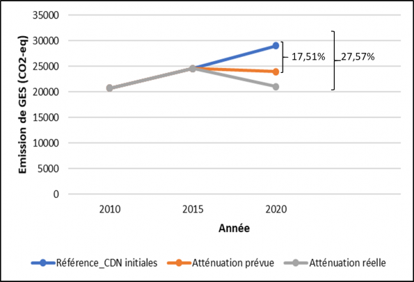
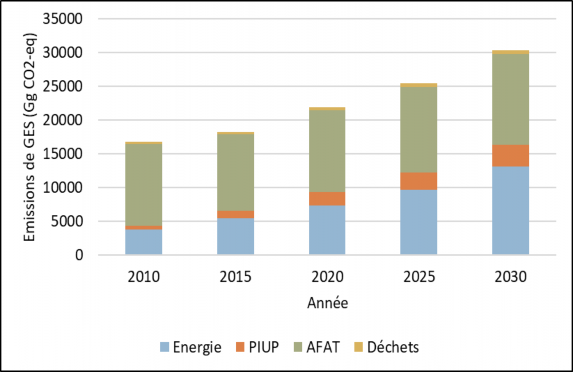
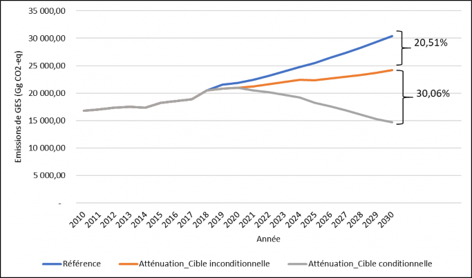
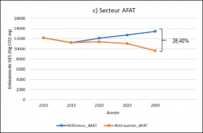
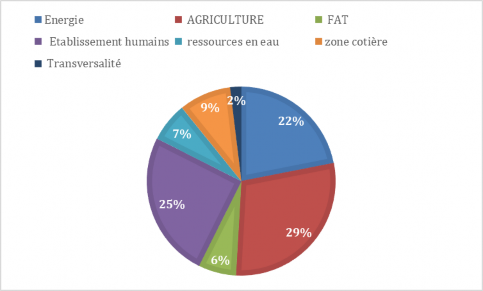

Interim document
October 2021
Introduction
At the 21st Conference of the Parties (COP21) in Paris on December 12, 2015, the Parties to the United Nations Framework Convention on Climate Change (UNFCCC) reached a historic agreement to combat climate change. This is to accelerate and intensify the actions and investments needed for low-carbon sustainable development. The Paris Agreement (PA) entered into force in November 2016, following the universal adoption of the Agreement by the Parties. Through this agreement, all stakeholders have made voluntary commitments to transition to a future that is resilient to climate change and low in greenhouse gas (GHG) emissions.
Parties are required to undertake and communicate their efforts to contribute to the achievement of these goals in the form of Nationally Determined Contributions (NDCs) reported to the UNFCCC (Article 3). The NDCs are therefore the centerpiece of the Paris Agreement, which invites the signatory countries to revise their commitments every 5 years with a view to raising ambitions in terms of both mitigation and adaptation in order to keep global warming below 2°C or even 1.5°C.
As a prelude to the Paris Agreement, Togo prepared and submitted its Intended Nationally Determined Contributions (INDCs) in 2015 which were confirmed as its NDCs after the adoption of this agreement. Togo with the support of the United Nations Development Program (UNDP) through the "Climate Promise" initiative and the CDN Support Program (NDC Support Programme) is engaged in the review of its CDNs in 2020.
Togo aims, by revising its NDCs, to comply with the commitments made to the Paris Agreement and to ensure their alignment with its development priorities (National Development Plan-PND and government roadmap 2025) and the Sustainable Development Goals (SDGs).
The revision of Togo's NDC covers, among other things, the updating of data and information with regard to new programmatic and political developments, the consideration of the infrastructure sector, better integration of the water resources sector and the integration of hydrofluorocarbons (HFCs) and short-lived atmospheric and climate pollutants in the gases whose emissions are to be reduced. This has made it possible to update the country's objectives in terms of commitment by integrating new projects on the basis of new incentive measures in the field of transport and renewable energies to raise the level of ambition.
Togo's revised NDCs outline enhanced actions and the necessary enabling environment over the 2015-2020 period that laid the groundwork for more ambitious goals beyond 2020, contributing to the concerted effort to prevent a 2°C increase in the global average temperature and continue efforts to limit the temperature to 1.5°C above pre-industrial levels.
By 2030, Togo plans to increase climate resilience through comprehensive mitigation and adaptation and disaster risk reduction strategies. Togo has set itself ambitious sustainability goals related to the production and consumption of food, water and energy. These objectives will be achieved by supporting empowerment and capacity building, improving the provision of basic social services, technological innovation and the sustainable management of natural resources, in accordance with the principles of good governance.
Beyond the CDN 2030 target, Togo is committed to making progress towards a long-term low-carbon and climate-resilient development strategy through its national development plan (PND 2018-2022 ) and the 2025 government roadmap.
With this in mind, the country has adopted a plan for the preparation and implementation of its NDCs covering the period 2020-2024. This nine-program plan aims to accelerate transformational change towards low-carbon, climate-resilient development.
This revised NDC document has seven chapters dealing respectively with the national context, governance, mitigation, adaptation, financial and technological needs and the assistance required, the national measurement, reporting and verification system (MRV), and the communication strategy on the implementation of the NDCs.
Chapter 1: Country Context
1.1 GENERAL PRESENTATION
Togo is located in the intertropical zone. It enjoys a 4-season tropical Guinean climate in the southern part and a two-season tropical Sudanian climate in the northern part. The Maritime and Savannah regions are those that receive less than 1000 millimeters of water per year. An irregularity of the seasons has been observed in recent decades. The Atakora massifs and the mountains of Togo wrap the Togolese territory from the northeast to the southwest. Mount Agou is the highest peak in the country, which culminates at more than 900 m to the southwest. On both sides of this chain extends the peneplain. In Togo, four major soil classes are encountered. These are raw and poorly evolved mineral soils; tropical ferruginous soils; ferralitic soils and vertisols and hydromorphic soils.
With a forest cover of 24.24%, the biological resources of Togo are numerous and diversified. The plant formations are made up of dense semi-deciduous forests, Guinea savannahs, Sudanese savannahs interspersed with dry forests or open forests depending on the locality, gallery and riparian forests, etc. In Togo, the flora has 3491 terrestrial species and 261 identified aquatic species. The fauna, evaluated at 3469 species, is made up of terrestrial species, avifauna and aquatic fauna. Five main phytogeographic domains share Togo. They are called ecological zones.
The water resources available to Togo are quite abundant. They consist of surface water drained by the three main watersheds (Oti, 47.3%, Mono, 37.5%, Lake Togo, 16%) and renewable groundwater contained in the two aquifers of the basement and the sedimentary coastal. The total volume of renewable water resources is estimated at about 19 billion cubic meters per year, or about 27% of rainfall (about 70 billion cubic meters per year).
Togo has a 50 km long coastal zone stretching from Lomé to Aného with a major economic importance for the country. Indeed, a variety of activities such as fishing, industry, crafts, tourism, etc. operates in this area. Opening onto the Gulf of Guinea, the balance of the physical framework of the coast takes on a certain particularity due to the interrelationships that exist between the different elements of this fragile environment, the weight of population growth, the existing developments that are expand every year. It is exposed to coastal risks: erosion, flooding and pollution.
The general population and housing census of November 2010 establishes the resident population of Togo at 6,191,155 inhabitants with an average annual growth rate of 2.3%. As of January 1, 2019, projections placed this workforce at 7,538,000 inhabitants. It will be 7,723,000 inhabitants on January 1, 2020. The average density is 109 inhabitants/km² in 2010. It varies according to the regions and is denser in the Maritime region and low in the Savannah region. In Togo 53.5% (2017) of the population lives below the poverty line. The poverty rate decreased by 1.6 points between 2015 and 2017. In 2018-2019, a new estimate of the poverty line was made, in order to more accurately assess the proportion of households living below the poverty line. of poverty. The incidence of poverty calculated on this new basis is 45.5% at the national level. Togo's Human Development Index (HDI) rose from 0.426 in 2000 to 0.484 in 2014 then 0.484 in 2015, which now places the country in 162nd place, out of the 188 countries with comparable data.
Placing emergence at the heart of its ambition, Togo has made remarkable progress over the past 10 years and has set itself high economic growth and social and human development objectives for the years to come. The global pandemic due to Covid-19 is an unprecedented shock that will have significant repercussions for Africa and particularly for Togo. However, Togo wishes to give new impetus to its economy and society in the form of a concrete strategic plan. Also, the government has defined a roadmap launched in October 2020 for the 2025 horizon. This roadmap aims to adjust the integrated national vision by having an overall understanding of the context of Togo, in particular considering the Covid-19 context, to update Togo's portfolio of projects and reforms defined in its National Development Plan (PND) taking into account the new vision and their state of progress and to guide the implementation of this new vision at the level of each sectoral ministry.
The government roadmap aims for “a Togo at peace, a modern Nation with inclusive and sustainable economic growth”. This vision is structured around three interdependent strategic axes: (i) strengthening social inclusion and harmony and consolidating peace; (ii) boost job creation by drawing on the strengths of the economy; and (iii) modernize the country and strengthen its structures. The three axes are declined in ten ambitions responding to the main challenges of the country. Togo places particular emphasis on issues related to climate change at the level of ambition 10, which puts sustainable development and the anticipation of future crises at the heart of the country's priorities.
1.2 SUMMARY OF THE EVALUATION OF THE IMPLEMENTATION OF TOGO'S INITIAL NDC
After the adoption of the Paris Agreement, creating synergies between climate action and implementing development has become an essential subject for the effectiveness of public policies in Togo. Two levels of reduction have been proposed: an unconditional reduction of 11.14% and a conditional reduction of 20% without specifying the conditions for a total financing requirement estimated at US$3.54 billion (Adaptation = 1.54; Mitigation = 1.10; Technology transfer=0.5; Capacity building = 0.4).
All of the projects implemented in terms of mitigation and adaptation with co-benefits in terms of mitigation have enabled Togo to achieve 7,990 Gg CO2-eq of reduction in its emissions in 2020 instead of 5,075 Gg CO2-eq reduction initially planned, i.e. a reduction of 27.57% by 2020 instead of 17.51% compared to the reference as shown in Figure 1. The additional reduction is therefore 10 .06%.

Figure 1: Projected and actual mitigation scenarios in 2020 versus baseline
Overall, Togo has been politically proactive in the field of climate change for more than 20 years and is committed to combating its adverse effects, which affect the population and many sectors of economic activity through a series of actions both in the framework of multilateral actions and national initiatives.
Chapter 2: Governance
2.1 EXISTING NDC INSTITUTIONAL SYSTEM
In 2015, through inter-ministerial decree N°002/MERF/MMEFPD, a coordination committee for the process of drawing up the planned nationally determined contributions (INDC) was set up. This INDC committee was replaced in 2018 by the National Authority for the coordination of the process of drafting national communications (CN), biennial updated reports (BUR) on climate change and NDCs, set up by decree no. °0095 / MERF/SG/DE of July 13, 2018. This authority, through the NDC sub-committee, is responsible for monitoring the implementation of the NDCs. This CDN sub-committee is made up of representatives of public institutions, the private sector and civil society organizations concerned with the issue of climate change. These are the presidency of the republic, the prime minister, the ministry in charge of foreign affairs, the ministry in charge of finance, the ministry in charge of planning, the ministry in charge of agriculture, the ministry in charge of energy, the ministry responsible for the advancement of women and youth and other ministries, civil society organizations, and employers.
2.2 ANALYSIS OF THE STRENGTHS, WEAKNESSES, OPPORTUNITIES AND THREATS OF THE EXISTING INSTITUTIONAL SYSTEM
The existing NDC institutional framework suffers from certain shortcomings (Table 1).
Table 1: Strengths, weaknesses, opportunities and threats of the existing institutional framework
|
Strengths |
Weaknesses |
|
|
|
Opportunities |
Threats |
|
|
2.3 CAPACITY BUILDING FOR GOVERNANCE
In response to the constraints and gaps identified for the existing institutional framework, the following actions are proposed to ensure effective governance and coordination of the NDC implementation process. It will be:
establish a framework for dialogue and communication between the various thematic bodies, operational entities, implementing agencies, civil society and private sector organizations and other organizations outside the Convention;
strengthen the technical capacities of stakeholders in all key themes related to the priority sectors concerned by the mitigation studies;
mobilize the necessary financial resources to make the NDC implementation committee operational;
make operational the various existing committees that are linked to climate change;
develop an institutional capacity building program for the proper implementation of the NDCs;
strengthen the technical and operational capacities of the various stakeholders of the NDC committee;
strengthen collaboration between the institutions in charge of implementing government policies and the institutions in charge of studies;
define the specifications of the various stakeholders of the CDN committee.
Chapter 3: Mitigation
To contribute to the effective fight against the harmful effects of climate change, efforts are being made by the Togolese government to reduce greenhouse gas emissions.
3.1 CONTRIBUTIONS TO MITIGATION: REFERENCE AND MITIGATION SCENARIOS
3.1.1 Reference scenario
The data used are those taken from the thematic and sectoral studies of the 4th NC and the 2nd RBA. The sectors, gases, categories and pools covered by the revised nationally determined contributions are:
sectors: energy; industrial processes and product use (PIUP); agriculture, forestry and other land use (AFOLU); Waste
gases: CO2, CH4, N20, Hydrofluorocarbons (HFCs) in accordance with the Kigali Amendment to the Montreal Protocol.
Short-lived air pollutants (SLCPs): black carbon (CB), particulate matter PM 2.5 and PM 10, nitrous oxides, volatile organic compounds and carbon monoxide.
For each sector, projections of GHG emissions are made over the period 2010-2030 and are as follows (Figure 2):
energy sector: emissions vary from 3725.16 Gg CO2-eq to 13169.18 Gg CO2-eq between 2010 and 2030, an increase of 254%;
PIUP sector: the projection of emissions increases from 551.19 Gg CO2-eq in 2010 to 3,203.54 Gg CO2-eq in 2030, i.e. an increase of approximately 481% in the sector;
AFAT sector: emissions increase from 12,190.89 Gg CO2-eq to 13,464.37 Gg CO2-eq between 2010 and 2030, an increase of 10.45%;
waste sector: sector emissions as a whole vary from 335.7 Gg CO2-eq in 2010 to 573.3 Gg CO2-eq in 2030, an increase of 70.8 %.
Overall, GHG emissions increase from 16,802.92 Gg CO2-eq in 2010 to 30,410.42 Gg CO2-eq in 2030, an increase of 80.98%.

Figure 2: Trends in projected GHG emissions from different sectors according to the reference scenario
3.1.2 Mitigation scenario
The GHG emission reduction potentials are estimated by sector and are then aggregated at the national level. In general, the information provided is based on new programmatic developments in Togo, in particular the National Development Plan (PND 2018-2022) and the government roadmap 2025. This information is also based on sectoral measures and priorities such as presented in appendix 1.
3.1.2.1 Overall quantified commitments
Mitigation measures are guided by a long-term low-carbon development aspiration that promotes the implementation of its government roadmap 2025, its PND (2018-2022), its policy of self-sufficiency food and the fight against poverty to become an emerging state by 2050.
The implementation of the plans, strategies, programs and other planning documents used in this study relies on the various resources (own funds, national and international loans) that the government mobilizes for the country's development.
In addition, in order to ensure low-carbon sustainable development, Togo has embarked on an ambitious program to combat climate change, the activities of which require sustained support from its technical and financial partners (capacity building , technology transfer and dissemination, and financial resources).
Unconditional contribution
The results of the analysis of sectoral reductions indicate that Togo can commit to an unconditional contribution to reducing its greenhouse gas (GHG) emissions by 20.51% by 2030, i.e. 6,236.02 Gg CO2-eq (Figure 13; Table 11).
Conditional contribution
In the approach proposed for the mitigation scenario, the Togolese State undertakes, if it receives the required support, to achieve an additional reduction of 30.06% of emissions GHG emissions compared to the reference scenario by 2030, i.e. 9,305.59 Gg CO2-eq (Figure 3), without compromising its policy of food self-sufficiency by proceeding in such a way as not to compromise its sustainable development.

Figure 3: Trends in overall GHG emission reductions relative to baseline
Global contribution
Overall, Togo's contribution amounts to 50.57%, i.e. 15,378.55 Gg CO2-eq by 2030, broken down as follows:
Unconditional target: 20.51%;
Conditional target: 30.06%.
These new commitments represent a progression from the initial NDCs and correspond to the highest level of ambition possible, taking into account national circumstances in accordance with paragraph 3 of Article 4 of the Paris Agreement.
3.1.2.2. Commitments by sector
Figure 2 shows the level of attenuation in each sector:
energy sector: the analysis of the mitigation scenario shows a reduction of 16.89% (2,224.87 Gg CO2-eq) by 2030 compared to the reference scenario. Reduction trends in this sector are shown in Figure 4a;
PIUP sector: given that the cement production sub-sector does not generate any potential reduction, the reduction of emissions in the PIUP sector comes down to that of the hydrofluorocarbons (HFCs) sub-sector ) and corresponds to 0.8% by 2030 compared to the reference scenario (Figure 4b);
AFAT sector: the estimated value of the mitigation scenario by 2030 is 9,640.17 Gg CO2-eq against 13,464.37 Gg CO2-eq for the reference (Figure 4c), i.e. a reduction of 28.40% (3,824.20 Gg CO2-eq);
waste sector: the estimated value of the mitigation scenario by 2030 is 412.20 Gg CO2-eq compared to 573.325 Gg CO2-eq for the reference scenario, i.e. a 28.10% reduction (Figure 4d).
 
Figure 4: Trends in GHG emission reductions compared to the reference scenario in the different sectors
3.1.2.3. Ambition building
The revision of Togo's NDCs was carried out in consultation with stakeholders and is aligned with the development objectives contained in the PND and the 2025 government roadmap, on the one hand, and the objectives of the Agreement of Paris, on the other hand. As a Party to the Paris Agreement, Togo is committed to setting the ambitious goals needed to effect change and remains fully supportive of the Paris Agreement and all of the responsibilities and actions set out therein.
By submitting this NDC, Togo, a low GHG emitter, supports the call for all Parties to make their submissions, to ensure that their NDCs are in line with their contributions to global emissions and their respective responsibilities under the Convention and to take measures that will limit the increase in global temperature to 1.5°C; well below pre-industrial levels.
Togo's new contributions are fair and ambitious, taking into account national circumstances, such as the SDGs and the eradication of poverty, demography, geography, climate, dependence on external stimulators. They go well beyond the commitments presented in the initial Togo NDC submission, i.e. in terms of scope, sectoral ambition, coherence between adaptation and mitigation, horizontal themes, including gender, including transparency. The details of the ambition enhancement are recorded in Table 2.
The COVID 19 pandemic represents a time of profound upheaval, causing an economic downturn due to declining socio-economic activities, and aggravating the country's economic vulnerabilities to climate change. However, Togo still maintains in its priorities the taking of appropriate measures to adapt to and fight against the adverse effects of climate change.
Table 2: Mitigation ambition compared to current NDCs
|
Improvement Components |
Revised NDCs (2021) |
Initial CDNs (2015) |
|
Strengthening of the GHG target |
Type of year-end target (2030 emissions level vs. 2010 emissions level): In 2030, the reduction in emissions broken down by sector is as follows:
|
Deviation from SAM target type (baseline) in 2030: Reduction of emissions by 11.13% in 2030 compared to SAM. |
|
Improvement Components |
Revised NDCs (2021) |
Initial CDNs (2015) |
|
||
|
Geographic coverage |
National level |
National level |
|
Sector coverage |
|
|
|
Couverture des GES |
|
|
|
Reinforcement or addition of policies and actions |
Mitigation policies and measures (MAP) in the following sectors:
|
Mitigation MPAs (in a higher ambition scenario) in the following sectors: Energy Emissions from burning fossil fuels |
|
Reinforcement or addition of a non-GHG sectoral target |
The revised NDCs are consistent with the following non-GHG sector goals in 2030:
|
|
|
Aligning the implementation of the existing NDC with long-term objectives |
Furthermore, the revised NDCs address the regional aspect contributing significantly to the priority measures identified in the energy sector in the PND. |
The mitigation of GHGs has integrated that of short-lived climate pollutants in accordance with the National Plan for the Reduction of Air Pollutants and Short-lived Climate Pollutants. Accordingly, implementation of Togo's revised NDCs is expected to yield substantial benefits in terms of reducing short-lived climate pollutants and air pollutants, improving air quality and health. public.
The full implementation of the updated NDC should make it possible in 2030 to reduce compared to the reference scenario:
black carbon emissions by 80%,
methane emissions by 32%,
particle emissions by 58% and
nitrogen oxide emissions by 51%.
In addition, HFC emissions would be reduced by 9% in 2030 compared to a baseline scenario with a steep reduction from 2029 in line with the HFC phase-out schedule provided by the Kigali Amendment.
The main actions to achieve the objective of SLCPs mitigation while improving air quality and benefiting human health are:
Increase the number of households cooking using improved efficiency biomass stoves and cleaner fuels like LPG or electricity.
increase the efficiency of charcoal production kilns;
renewing the vehicle fleet to increase efficiency and compliance with stricter vehicle emission standards;
promote the use of electric vehicles;
increase the efficiency of animal production to minimize emissions from enteric fermentation and manure;
adopt alternative wetting and drying practices for rice production to reduce methane emissions;
promote landfill management best practices for municipal solid waste, including methane capture;
Increase municipal solid waste collection and reduce open burning of municipal solid waste.
3.2. INFORMATION TO IMPROVE THE CLARITY, TRANSPARENCY AND UNDERSTANDING (ICTC) OF REVISED NATIONALLY DETERMINED CONTRIBUTIONS
Table 3 below presents the information necessary for clarity, transparency and understanding as recommended by annex I of decision 4/CMA1. It allows to measure the extent of the information provided.
Table 3: Information Needed for Clarity, Transparency and Understanding (ICTC)
|
Information necessary for clarity, transparency and understanding (ICTC) |
||
|
Para |
Guidelines from Decision 4/CMA.1 |
ICTC Guidelines Applicable to Togo's Revised NDC |
|
1 |
Quantifiable information on the benchmark (including, where appropriate, a reference year): |
|
|
a) |
Reference year(s), base year(s), reference period(s) or other starting point(s) |
Reference year: 2018 (which is the reference year for the 4th National Communication and the 2nd Biennial Updated Report) |
|
b) |
Quantifiable information on the benchmark indicators, their values in the reference year(s), base year(s), reference period(s) or other starting point(s) and, if applicable, in the target year |
Reference indicator: national greenhouse gas inventory (IGES) for the reference year 2018 contained in the NIR and updated. Disaggregated emissions in 2030 are as follows:
|
|
c) |
For strategies, plans and actions referred to in paragraph 6 of Article 4 of the Paris Agreement, or policies and measures as elements of nationally determined contributions where paragraph 1(b) ci - above is not applicable, Parties should provide other relevant information |
NA |
|
d) |
Target against the benchmark, expressed numerically, for example as a percentage or amount of reduction |
A detailed assessment of the GHG mitigation options identified for Togo estimates a total emissions reduction potential of approximately 15,378.55 Gg CO2-eq in 2030 compared to baseline emissions for the same year estimated at 30,410.42 Gg CO2-eq. This reduction is divided into unconditional contribution and conditional contribution.
|
|
e) |
Information on the data sources used to quantify the data point(s) used to quantify the reference point(s) |
The data sources used to quantify the benchmarks are time series analysis of the Fourth National Communication (4CN) and Second Biennial Updated Report (2RBA), as well as information from consultations with the various ministries concerned and consultations with stakeholders. In addition, information contained in departmental strategies as well as estimates from international organizations were used to quantify the benchmarks. The baseline scenario and mitigation scenarios were developed for all sectors using LEAP software. For forestry and other land uses, the IPCC 2006 spreadsheets were used and the results imported into LEAP. |
|
f) |
Information on the circumstances under which the Party may update the values of the reference indicators |
In the following circumstances, Togo may update or modify the values of the reference indicators:
|
|
2 |
Deadlines and / or deadlines for implementation: |
|
|
a) |
Timeframe and/or implementation period, including start and end dates, in accordance with any other relevant decision adopted by the Conference of the Parties serving as the meeting of the Parties to the Paris Agreement (CMA) |
January 1, 2021 to December 31, 2030 |
|
b) |
Whether it is an annual or multi-year objective, as the case may be |
2030 annual target, including updates to 2025 targets. The NDC interventions will be implemented in stages in accordance with the annual work plan; however, the chosen target year is 2030. |
|
3 |
Range and Coverage: |
|
|
a) |
General description of the target |
Sectoral objectives based on activities and policies, including emission reductions in certain sectors. The Government of Togo will achieve the conditional targets if international support in terms of financing, technology transfer and/or capacity building is provided to it in a sustained and timely manner. |
|
b) |
Sectors, gases, categories and pools covered by the nationally determined contribution, including, where applicable, in accordance with the guidelines of the Intergovernmental Panel on Climate Change (IPCC) |
Sectors:
Gases :
Short-lived air pollutants (SLCPs):
|
|
c) |
How the Party took into account paragraph 31 c) and d) of decision 1/CP.21 |
In accordance with paragraph 31 c) of Decision 1/CP.21, Togo has committed to include in its revised NDCs all categories of anthropogenic emissions. The detailed assessment carried out during the process of formulating the revised NDCs showed that the data needed to set targets and rigorously assess the impact of policies and actions on emissions for all sectors was not available . Togo will gradually extend the scope of its NDC coverage to all categories of anthropogenic emissions and removals, as more robust data becomes available. |
|
d) |
Mitigation co-benefits resulting from the adaptation measures and/or economic diversification plans of the Parties, including the description of the specific projects, measures and initiatives of the adaptation measures and/or economic diversification plans of the Parties Parts |
|
|
4 |
Planning process: |
|
|
Information on the planning processes the Party has undertaken to prepare |
||
|
a) |
its nationally determined contribution and, as appropriate, on the Party's implementation plans, including, as appropriate: |
|
|
(i) |
National institutional arrangements, public participation and engagement with local communities and indigenous peoples, in a gender-sensitive manner |
Provisions relating to governance and coordination at the sector level are included in each of the sector action plans of the NDCs. A National NDC Committee has been set up temporarily for the duration of the NDC program implementation projects. This committee has not been functional at all and deserves to be rearranged and strengthened. New national institutional arrangements based on prior engagement of public, private, local community and gender stakeholders are being developed. |
|
(ii) |
Contextual questions, including, among others, where applicable: |
|
|
a. |
National circumstances, such as geography, climate, economy, sustainable development and poverty eradication |
Recent political development in Togo. It was marked by the presidential elections of 2015 and 2020, the great marches of 2017, the legislative elections of December 2018 followed by constitutional reforms and the municipal elections of June 2019. Geo-climatic profile. Togo is located in the intertropical zone. It enjoys a 4-season tropical Guinean climate in the southern part and a two-season tropical Sudanian climate in the northern part. The Maritime and Savannah regions are those that receive less than 1000 millimeters of water per year. An irregularity of the seasons has been observed in recent decades. Demographic characteristics and poverty. The General Census of Population and Housing - final result of November 2010 establishes the resident population of Togo at 6,191,155 inhabitants with an average annual growth rate of 2.3%. As of January 1, 2019, projections placed this workforce at 7,538,000 inhabitants. It will be 7,723,000 inhabitants on 1 January 2020. The average density is 109 inhabitants/km² in 2010. It varies according to the regions and is denser in the Maritime region and low in the Savanes region. In Togo 53.5% (2017) of the population lives below the poverty line. The poverty rate decreased by 1.6 points between 2015 and 2017. Economic and sector context. The achievement of the objectives of the Togo 2025 government roadmap resulting from the revision of the National Development Plan (PND 2018-2022) will affect all sectors, both public and private, of Togo's economic life. Overall, the national economic context was marked by continued efforts to maintain the stability of the macroeconomic framework and improve the business environment. The state fully controls the energy sector with the participation of several ministries and other state or private institutions. All sources combined, final energy consumption amounted to 2,145.29 ktoe in 2018 compared to 1,973 ktoe in 2016, an increase of 172.29 ktoe (8.7%) in 3 years. Total final energy consumption in Togo per year and per inhabitant has been stable since 2000 at 0.27 toe/capita. Self-consumption of fuelwood (charcoal and firewood) is predominant and represents 76% of national production against 24% for marketing. In the field of agriculture, the cultivated area is estimated at 1.4 million hectares, or 41% of the cultivable area and 25% of the total area of the country. The comparative analysis of the GDP and the budget reveals that in 2012, the value generated by agriculture in constant price represents 42.2% of the GDP. This sector supports 2/3 of Togo's active population. The contribution of agriculture to the GDP growth rate, which was 0.7% in 2018, would drop to 1% in 2019. The forest cover in Togo is 24.24%. The role of the forestry sector in the economic development of the country is very important. Indeed, it contributes to the creation of jobs, the reduction of unemployment, the creation of wealth, etc. But despite this importance, the added value generated is low according to the statistics. Its contribution to GDP was 33 million US$ or 16.5 billion FCFA, or 1.68% of GDP in 2006. It should be noted that the non-market and ecosystem services of the forest sector are not taken into account. account in these statistics. In 2015, the added value of the forestry sector reached 17.80 billion FCFA for firewood and 71.19 billion FCFA for charcoal, i.e. nearly 89 billion FCFA for wood energy. Description of Togo's development priorities and their relationship to climate change. Togo's development vision today is guided by the Togo 2025 government roadmap. This document clearly presents the country's development vision and priorities broken down into three main strategic axes, namely: (i) strengthening inclusion and social harmony and ensuring peace; (ii) boost job creation by relying on the strengths of the economy; and (iii) modernize the country and strengthen its structures. Beyond the national vision and priorities, each sector of the economy has its own development priorities that fit into the national framework. These priorities are defined as the sectoral operational policies. The issue of climate change, as a whole, is now included in national development policies. Despite the efforts made, it must be noted that the degree to which the problem is taken into account in the policies initiated by the Government varies greatly from one sectoral policy to another, with levels of execution in general, low. |
|
b. |
Good practices and experience related to the preparation of the nationally determined contribution |
The revised NDCs capitalized on the analytical capacities, participatory practice, experience, tools and knowledge base that were created even before the initial NDCs, maintained and improved under 4CN and 2BUR. Target setting was well informed by an existing robust and comprehensive GHG inventory. Furthermore, the revised NDCs have integrated sustainable development into its P&Ms, quantifying the link between sustainable development and climate change mitigation. Specifically, with regard to the economic and environmental dimensions. Finally, the revised NDCs also include a regional dimension. |
|
c. |
Other aspirations and contextual priorities recognized upon joining the Paris Agreement |
A commitment to reducing GHG emissions levels nationwide will require cleaner technologies, expertise and financing. Technology: The need for new innovations is rooted in the need to be more efficient and to produce using cleaner technologies. The availability and transfer of technologies that are environmentally friendly and that support low-carbon and climate-resilient development is paramount. As an LDC, these opportunities are often not easily accessible and so the spirit of the Paris Agreement would help foster North-South and South-South cooperation. Expertise: The integration and transformation of new ideas and technologies into the economy, society and the environment will require some capacity building for their appropriate applicability and dissemination. Financing: Technology transfer and capacity building cannot take place without sufficient financial resources being made available to undertake the transition. As a Heavily Indebted Poor Country (HIPC) and highly vulnerable to the impact of climate change, it is important to strike the right balance to build the country's resilience and implement the necessary adaptation and mitigation measures, while meeting the daily needs of the country. The steps needed to make the transition are costly. |
|
b) |
How the Party preparing its nationally determined contribution has been informed by the results of the global stocktake, in accordance with paragraph 9 of Article 4 of the Paris Agreement |
Togo participated in the Talanoa Dialogue in 2018, which generated political momentum for enhanced climate action, including calling on Parties to update their NDCs. In addition, the country joined the High Ambition Coalition of countries determined to realize their climate ambition by 2020. The preparation of the revised NDCs was in line with the recommendations of the Talanoa Call to Action and the High Ambition Coalition, taking into account national circumstances. |
|
c) |
Each Party with a nationally determined contribution under Article 4 of the Paris Agreement that consists of adaptation measures and/or economic diversification plans resulting in mitigation co-benefits in accordance in Article 4(7) of the Paris Agreement to submit information on: |
|
|
(i) |
How were the economic and social consequences of response measures taken into account in the development of the nationally determined contribution |
National and regional stakeholder consultations have taken into account the social, economic and environmental impacts of national mitigation measures by integrating the data collected in the assessment tools during the development of the revised NDCs. |
| (ii) |
Specific projects, measures and activities to be implemented to contribute to mitigation co-benefits, including information on adaptation plans that also produce mitigation co-benefits, which may cover, but not be limit to it, key sectors, such as energy, resources, water resources, coastal resources, human settlements and urban planning, agriculture and forestry; and economic diversification actions, which may cover, but are not limited to, sectors such as manufacturing and industry, energy and mining, transport and communications, construction, tourism, real estate, agriculture and fishing |
ENERGY Sector:
PIUP Sector:
AFAT Sector
Waste sector:
|
|
5 |
Assumptions and methodological approaches, including those for estimating and accounting for anthropogenic greenhouse gas emissions and, where relevant, removals: |
|
|
a) |
Assumptions and methodological approaches used to account for anthropogenic greenhouse gas emissions and removals corresponding to the Party's nationally determined contribution, in accordance with decision 1/CP.21, paragraph 31, and adopted accounting guidance by the CMA |
Togo has accounted for its anthropogenic GHG emissions and removals using the Intergovernmental Panel on Climate Change (IPCC) 2006 Guidelines for National Greenhouse Gas Inventories, the 2006 software of the IPCC and the 2013 Supplement to the 2006 IPCC Guidelines for National Greenhouse Gas Inventories for Wetlands. Togo has also relied on:
|
|
b) |
Assumptions and methodological approaches used to report on the implementation of policies and measures or strategies in the nationally determined contribution |
The quantification of the level of GHG emissions in the mitigation scenario for 2030 is based on the following assumptions:
The methodological approach used is that of LEAP-IBC. |
|
c) |
If applicable, information on how the Party will take into account existing methods and guidance under the Convention for accounting for anthropogenic emissions and removals, in accordance with paragraph 14 of Article 4 of the Agreement. Paris, if applicable |
In accordance with paragraphs 13 and 14 of Article 4 of the Paris Agreement, Togo has carried out a QA/QC of the input data to ensure that there are no omissions or double counting. |
|
d) |
IPCC methodologies and parameters used to estimate anthropogenic greenhouse gas emissions and removals |
The 2006 IPCC guidelines, good practice guides and the IPCC database were used to estimate anthropogenic GHG emissions and removals |
|
e) |
Assumptions, methodologies and approaches specific to the sector, category or activity, in accordance with IPCC guidance, where applicable: |
|
|
(i) |
Approach to address emissions and subsequent removals from natural disturbances on managed lands |
GHG emissions and removals from natural disturbances, if any, will be accounted for in accordance with prescribed 2006 IPCC guidelines. |
|
(ii) |
Approach used to account for emissions and removals from harvested wood products |
GHG emissions and removals from harvested wood products, if any, will be accounted for in accordance with the prescribed 2006 IPCC guidelines. |
|
(iii) |
Approach used to address the effects of age class structure in forests |
NA |
|
f) |
Other assumptions and methodological approaches used to understand the Nationally Determined Contribution and, where relevant, estimate the corresponding emissions and removals, including: |
|
|
(i) |
How benchmarks, benchmarks, including sector, category or activity-specific benchmarks where applicable, are constructed, including, for example, key metrics , assumptions, definitions, methodologies, data sources and models used |
To quantify the level of GHG emissions in the projected reference scenario in 2030, the following assumptions were made for the drivers of emissions growth:
|
|
(ii) |
For Parties whose nationally determined contributions contain components other than greenhouse gases, information on the assumptions and methodological approaches used in relation to these components, if any |
The methodological approach used for short-lived climate pollutants (black carbon, PM2.5 and PM10) is that of LEAP-IBC. |
|
(iii) |
For climate forcers included in Nationally Determined Contributions not covered by the IPCC Guidelines, information on how climate forcings are estimated |
NA |
|
(iv) |
Other technical information, as required |
NA |
|
g) |
The intention to use voluntary cooperation under Article 6 of the Paris Agreement, as appropriate |
Togo recognizes the important role of market-based international cooperation in contributing to the mitigation of GHG emissions and the promotion of sustainable development. Togo will continue to explore the potential of bilateral, multilateral and regional market-oriented cooperation, including in the context of Article 6 of the PA, which can facilitate, accelerate and improve technology development and transfer. , capacity building and access to financial resources that support Togo's sustainable transition to low-emission and climate-resilient growth. |
|
6 |
How the Party considers its nationally determined contribution to be fair and ambitious in light of its national circumstances: |
|
|
a) |
How the Party considers its nationally determined contribution to be fair and ambitious in light of its national circumstances |
Following the Talanoa Call to Action, launched by the Presidents of COP 23 and COP 24, Togo has made its revised NDC (2021) more ambitious than the NDC (2015) (i) articulating 2030 GHG emission reduction targets relative to 2010 levels. The national commitments are well in line with the emissions trajectories for 2050, which correspond to the long-term objective of the Paris Agreement. It is further important to note that the evolving nature of a country's situation should be reflected in the equity review through the following indicators:
|
|
b) |
Equity considerations, including equity reflection |
It should be noted that equity considerations from the national perspective encompass various issues and that no single single indicator can accurately reflect equity or a fair distribution of country efforts globally . |
|
c) |
How the Party has dealt with paragraph 3 of Article 4 of the Paris Agreement |
The revised 2021 NDCs propose an unconditional reduction of 20.51% compared to the reference scenario in 2030 compared to 11.14% for the current 2015 NDCs. The overall contribution (unconditional and conditional combined) of the revised NDCs (2021) is a reduction of 50.57% of GHG emissions compared to the reference scenario in 2030 compared to 31.14 for the current NDCs (2015). |
|
d) |
How the Party has dealt with Article 4(4) of the Paris Agreement |
Another issue that demonstrates the country's increased ambition concerns the application of an absolute economy-wide emissions reduction target (in accordance with Article 4, paragraph 4 of the Agreement). Paris), which guarantees the achievement of objectives in a relevant, complete, coherent, transparent and precise manner. |
|
e) |
How the Party has dealt with Article 4(6) of the Paris Agreement |
NA |
|
7 |
How the nationally determined contribution contributes to the achievement of the objective of the Convention as set out in its Article 2: |
|
|
a) |
How the nationally determined contribution contributes to the achievement of the objective of the Convention as set out in its Article 2 |
National commitments are well in line with the emissions trajectories for 2050 which correspond to the long-term objective of the Paris Agreement, thus contributing to the stabilization of GHG concentrations in the atmosphere at a level that would prevent dangerous anthropogenic interference with the climate system, and development in a sustainable manner, in accordance with Article 2 of the Convention. |
|
b) |
How the Nationally Determined Contribution contributes to the achievement of Article 2(1)(a) and Article 4(1) of the Paris Agreement |
Togo's contribution through its NDCs is in line with global ambitions to limit the temperature to 2°C and compatible with Togo's sustainable development goals |
Chapter 4: Adaptation
4.1. NATIONAL CONTEXT OF CLIMATE CHANGE ADAPTATION
4.1.1. National situation
Togo's economy is dominated by agricultural activities (nearly 40% of GDP) which are highly dependent on climatic conditions. Other development sectors such as energy, water resources, coastal zone, human settlements and health, forestry and other land uses also remain highly vulnerable.
It is in this sense that Togo undertook in the initial NDCs to contribute to the fight against climate change, to strengthen the resilience of systems and means of production in accordance with its National Action Plan for Adaptation to Climate Change (PANA) developed in 2008. In 2016, the country adopted a National Plan for Adaptation to Climate Change (PNACC) which confirms its commitment to strengthening the adaptive capacity of populations in the face of the effects adverse effects of climate change.
4.1.2. Institutional, legal and political arrangements
In terms of international commitments relating to the environment and adaptation to climate change, Togo has ratified the three conventions of the Rio generation: (i) the United Nations Framework Convention on Climate Change ( UNFCCC) (08 March 1995); (ii) the Convention on Biological Diversity (CBD) (04 October 1995); and (iii) the Convention to Combat Desertification (CCD) (September 15, 1995). At the national level, adaptation is part of the national environmental policy, the declaration of forest policy, the national strategy for sustainable development, the framework law on the environment and laws relating to forest codes, water, health, hydrocarbons, merchant marine.
At the institutional level, several actors intervene to strengthen adaptation to climate change in Togo. The main players in this system are: (i) the Ministry of the Environment and Forest Resources with all its branches, (ii) the National Commission for Sustainable Development made up of representatives of public and private institutions, local authorities, NGOs and other legal entities, (iii) the National Committee on Climate Change, which is a framework for information, consultation and monitoring of the implementation of the national policy on climate change, (iv) the Interministerial Monitoring Committee implementation of the NDCs and (v) the multidisciplinary team on climate change. These actors work together with other stakeholders such as public and private universities in Togo and the major institutions of the republic (Presidency of the Republic, Prime Minister, National Assembly, etc.).
4.2. ANALYSIS OF IMPACTS, RISKS AND VULNERABILITIES OF PRIORITY SECTORS
Since 2014, the scenarios developed show that climate change is a real concern for Togo and that current and future trends will lead to harmful consequences in the absence of appropriate measures. With an economy mainly focused on agriculture, climatic hazards make the Togolese population as a whole vulnerable.
Climate variability in Togo leads to food and nutritional insecurity, the degradation of forest resources, difficult access to energy, water resources and quality health care. Indeed Togo is confronted with a very accentuated spatio-temporal climatic variability. In 2020, temperatures will experience a maximum increase of 1.2°C, i.e. an increase of 20% compared to 2012. Precipitation is decreasing with amplitudes ranging from 15 mm to 98 mm of rain. This leads to climatic risks that influence all development sectors and are manifested by floods, drought, high temperatures, shifts in the seasons, violent winds, poor distribution of rains, soil erosion and coastal erosion.
Future projections of climate variability based on rigorous IPCC methods will look as follows for Togo. If the country remains in the stabilization of emissions (RCP6.0) compared to 2020, temperatures will increase with an amplitude of 0.6°C to 0.7°C in 2025 and 2.15°C to 2, 75°C in 2100. Precipitation will vary from -0.08% to +0.35% (2025) and from -0.3% to +1.26% (2100).
On the other hand, if the country embarks on the process of reducing greenhouse gas emissions (RCP4.5), temperatures will increase by 0.66 to 0.84°C (2025) and by 1 .53 at 1.96°C (2100). Precipitation will vary from -0.09% to +0.39% (2025) and from -0.21% to +0.89% (2100).
4.2.1. Energy sector
4.2.1.1. Biomass -energy
Wood energy represents 80% of the energy used by households and 90% of the local population use this source of energy in Togo. The current fuelwood potential will meet only 28% and 12% of national demand respectively by 2025 and 2050. Based on multi-criteria analyses, the fuelwood sector has an average vulnerability index estimated at 0 .58 nationally. At the regional level, the two northern regions of the country (Savanes and Kara) face a high level of vulnerability with an index between 0.6 and 0.8.
The impacts related to this vulnerability on this sector are essentially the low growth and production of biomass for wood-energy vocation, the scarcity of species for wood-energy vocation and the destruction of ecosystems protected and far from dwellings constituting refuges for most endangered species.
The vulnerability of the wood energy sector will increase in the future. Indeed, in the case of stabilization (RCP6.0), the vulnerability index of this sub-sector will fall into the high class from 2075 for the whole country. If appropriate measures are not taken, there will be socio-economic repercussions such as the rise in the price of firewood and charcoal, the increase in the poverty index in rural areas, etc.
4.2.1.2. Hydroelectricity
In Togo, hydroelectric power is produced exclusively by the Kpimé and Nangbeto dams, which are fed by large rivers. The current vulnerability of this sector is medium with an index of 0.51. In the future, its vulnerability will move to the high class from 2075 if nothing is done. This will accentuate the current impacts of climate change which are reflected in the reduction of the water layer of hydroelectric dams, the destruction of hydroelectricity works, the low capacity to supply energy to businesses and industries.
If the integrated water resources management (IWRM) measures provided for in the sector planning documents, as well as the renewable energy development policy are implemented, the vulnerability index will be considerably reduced by here 2025 (0.48) and 2050 (0.35).
4.2.1.3. Hydrocarbons
As Togo does not produce hydrocarbons, the vulnerability of this sector to climate change is not direct. It is linked to that of the wood-energy sector and hydroelectricity. Thus, the decrease in the energy supply in biomass and hydroelectricity will accentuate the consumption of hydrocarbons. Togo imports the petroleum products it needs, the hydrocarbons sector remains very sensitive to fluctuations in oil prices. In terms of impacts, there is an increase in expenditure due to an increase in hydrocarbon consumption with negative repercussions on the transport sector.
4.2.2. Agriculture, Forestry and Other Land Use Sector (AFOLU)
In Togo, the AFOLU sector is the most exposed to the effects of climate change. At the national level, a downward trend in precipitation coupled with an increase in temperature is expected. We therefore expect probable effects on biodiversity, the habitat of species, ecosystem services and agricultural production in Togo. These effects are mostly related to drought, flooding and the appearance of pests.
4.2.2.1. Forestry and other land uses (FAT) sub-sector
The resulting vulnerability of the forestry and other land uses sub-sector is 0.59 for the country as a whole, which is equivalent to a “medium” level of vulnerability. However, it is “high” for the Central, Kara and Savanes regions, and “medium” for the Plateaux and Maritime regions. This vulnerability in the FAT sector is reflected in all regions of the country by:
The increase in the natural mortality of woody species in the natural ecosystems of Togo. High temperatures and drought increase the intensity of fires which are responsible for most of the woody mortality in the forest areas. The natural mortality rate is 8.60%, 5.41% and 5.42% respectively for the Savannah, Kara and Central regions.
The degradation of the health status of woody populations. In the natural ecosystems of Togo, an average of 20 plants per hectare are attacked by parasites. According to field investigations, the high temperatures recorded in recent years would explain the recurrence of attacks on woody plants by pests and parasitic plants.
Chablis. The estimated damage caused by violent winds to forest massifs is estimated at 9 feet/ha in natural ecosystems.
Low capacity for regeneration. With climate change, vegetation fires are more violent, regeneration is suppressed or delayed. In the forest landscapes of protected areas less than 30% of the potential regeneration installed manages to survive the fires which become more and more violent with CC.
Land use. The drying of the climate, the increase in temperatures and evapotranspiration intensifies the leaching and the laterization of the soil, while heavy rains increase the erosion of the soil especially in rugged environments. This leads to increased land degradation. In addition, extensive slash-and-burn agriculture leads to the reduction of forest cover.
Very exposed to climate change, the FAT sector is subject to impacts such as the loss of forest cover, the loss of biodiversity and protected ecosystems, the disappearance of certain forest species and the low productivity of mangroves.
In the future, we will note the aggravation of the vulnerability of this sub-sector at the national level by 2050 with an index of 0.63 corresponding to a high vulnerability. This situation will be observed in all regions except in the plateaus, which will remain in the middle class. In this context, apart from the Atakora chain, all the forest ecosystems of Togo will be very exposed to the decrease in precipitation and an increase in temperature with an aggravation of the impacts linked to climatic hazards.
4.2.2.2. Agriculture, livestock and fisheries sub-sector
The major disruptions to agriculture, livestock and fishing in all economic regions of Togo are climatic hazards. These are the modification of the season, the irregular rainfall with pockets of drought, the increase in temperature, the floods and the attacks of pests. These hazards make this sub-sector very vulnerable with repercussions on food security (crop losses).
Vulnerability and impacts of the agriculture sub-sector
The resulting vulnerability of the crop production sector is globally high for the whole country and particularly in the savannah region. The impacts of this vulnerability are reflected in declines in yields estimated over the past ten years at between 30% and 51% for the main food crops.
In fact, the observed pockets of drought caused yield losses of 1.3t/ha, 1.0t/ha and 0.7t/ha respectively for maize, rice and yam. Pests, in particular the fall armyworm, caused losses ranging from 0.5 to 0.95 t/ha for maize. In 2020, the total area of flooded food crops is 6902 ha with production losses estimated at nearly 9000 t.
Currently assessed at 0.70, the national vulnerability index of the agriculture sub-sector will remain high with a slight increase to reach the value of 0.75 by 2050. This will accentuate the impacts on the agricultural sector. agriculture with the disruption of the agricultural calendar, the devastation of crops by pests (army caterpillars, white flies of desert locusts), the appearance of new invasive species, the disappearance of certain cultivars, the drop in agricultural yields, the erosion of arable land etc.
Vulnerability and impacts of the livestock sub-sector
In all regions of Togo, poultry farming is a widespread activity in rural areas. This type of family farming that occupies women is less
requiring water. However, the rearing of small ruminants and large livestock, widely practiced in the savannah and plateau regions by sedentary and transhumant herders, is demanding with regard to the availability of natural resources, in particular water. With the trend of prolonged drought in recent decades, there has been a recurrence of conflicts between herders and farmers, which accentuates vulnerability in the livestock sub-sector.
In the savannah region, there is a decimation of livestock linked to lack of water and fodder. In addition, the proliferation of epizootics such as anthrax, African swine fever, avian flu in the regions would be linked to the high temperatures which are increasingly felt. This situation affects national animal production, which covers less than 50% of the population's needs.
Vulnerability and impacts of the fisheries sub-sector
Fishing is concentrated on the coast, the southern Togo lagoon complex, the Nangbéto basin, and along the Mono and Oti rivers. With the drought and the high temperature the fishing sector becomes more vulnerable. Thus, the coverage rate of fish products fell from 35% in 2015 to 29% in 2017. High temperatures, floods and the early low water levels of rivers make spawning grounds sensitive, thus reducing the availability of fish. . As with livestock, the future vulnerability of the fishing sub-sector may experience an increase with an accentuation of the impacts, in particular the reduction in catches, the siltation of waterways and the disappearance of certain fish species. These impacts will also affect the government's efforts in aquaculture development with the depletion of fingerlings.
4.2.3. Water Resources Sector
The high temperatures, the irregularity and the modification of the distribution of precipitation are reflected by a reduction in the water stocks at the level of the ground water tables and surface water. This situation makes the water sector very vulnerable at the national level, especially in the savanna region. Based on the standardized precipitation index (SPI), the years between 1961 and 2018 are dominated by moderate or even severe drought in the Kara and Maritime regions. Currently, the impacts associated with climate change in the water sector are the early drying up of wells and rivers, the silting of rivers, saline intrusion in the continental terminal and pollution of the water. water.
Simulations indicate that in the event of stabilization (RCP6), the two large river basins (Oti and Mono) and the lagoon complex of Togo will be variously affected by 2030. Indeed, water stocks ( surface and underground) will increase from 7 to 28 million cubic meters in the Mono basin. However, they will decrease by 60 to 500 million and 120 to 750 million cubic meters respectively in the Oti and Lake Togo basins.
If measures are not taken, the problems of availability and accessibility of drinking water for the population will increase and the government will have difficulties in ensuring easy, universal and equitable access to drinking water (SDG6 Target 1) and improve its quality by reducing pollution (SDG6 Target 3). The impacts will worsen with the lack of drinking water in households and the risk of conflicts around water supply sources.
4.2.4. Human settlements and health sector
Human settlements are becoming increasingly vulnerable in Togo. In 2020 and 2021, the overflow of rivers in the Oti and Mono basin caused enormous material damage with loss of human life. We are witnessing the weakening and collapse of human facilities and infrastructure (roads, markets, health centers, homes, schools, electricity and telecommunications, etc.) which will increase in the future.
In terms of health, high temperatures and flooding lead to the outbreak and proliferation of germs of certain diseases such as malaria, meningitis, typhoid fever, cholera and respiratory diseases that were once localized and controlled. So far, the northern regions (Savannas and Kara) are the most vulnerable. However, the simulation shows that in the future, the risk of its diseases could extend southwards with an aggravation in the northern regions. The mortality rate would increase and the vulnerability of the elderly, pregnant women, disabled people, people living with HIV‐AIDS and children will become increasingly strong.
4.2.5. Coastal area
The phenomenon of erosion of the Togolese coast, which has been the subject of scientific observations since 1964, has resulted over the years in a modification of the coastline. Storms and natural cycles of undulations linked to climate change aggravate the advance of the sea towards human settlements on dry land, materialized by the retreat of the beach by an average of 10 m per year. This erosion threatens 42% of the national population, industrial units, economic and port activities, tourist remains, fishing villages.
In the future, all climate scenarios indicate an amplification of this phenomenon because the amplitude of sea level rise will increase from 11.35 cm in 2025 to 62 cm in 2100. This situation will aggravate the current impacts what are the complete disappearance of some of the coastal villages, the considerable loss of land and coastal ecosystems, the destruction of seaside infrastructures (roads, houses, hotels, etc.), the disruption of economic activities and the destruction of spawning grounds .
4.3. PRIORITIES, OBJECTIVES AND ADAPTATION MEASURES
4.3.1. Priorities
The following diagram represents the strategic map which will make it possible to strengthen the adaptive capacities of the populations in all the priority sectors, broken down here into axes. The defined objectives stem from the national priorities reflected in the PNACC and other national and sectoral planning tools (Figure 5). The implementation of activities to achieve these objectives is based on the promotion of the principles of equity, gender, cooperation, research and transparency.

Figure 5: Strategy map of adaptation in Togo
4.3.2. Adaptation measures/Co-benefits for mitigation
To build people's resilience capacities, adaptation measures, including those that result in beneficial effects in the field of mitigation, are identified in the priority sectors (Table 4).
The various measures identified in Togo integrate nature-based solutions that can contribute to mitigation while strengthening adaptation to climate change. These co-benefits translate into increased carbon sequestration potential, the ability of crops to cope with water stress and pest attacks, the reduction of risks linked to flooding and the proliferation of pathogens.
These identified measures respond to a number of persistent needs in terms of strengthening the resilience of communities to the effects of climate change despite the efforts undertaken by the State (Table 4).
In addition, the measures identified will contribute to the implementation of frameworks aimed at strengthening adaptation at the national and international level.
At the national level, the various adaptation measures will essentially contribute to the operationalization of the National Development Plan. They are also part of the dynamics of the Government's 2025 roadmap and will primarily contribute to project 35 (response to the main climate risks) and project 36 (green mobility programme). They also target in this roadmap projects 2 and 3 (implementation of the single social register, implementation of universal health coverage), project 5 (continuation of the policy of electrification for all), project 6 (increased access to drinking water and sanitation), projects 12, 13, 14 and 15 (improvement of agricultural yields, extension of the rural road network, acceleration of MIFA, extension of the Kara agropole in partnership with the private sector).
At the international level, the adaptation measures identified aim to contribute to the achievement of the Sustainable Development Goals (SDGs), in particular SDG2, which aims to ensure food and nutritional security; SDG3 on good health and well-being; SDG5 which wants to ensure the empowerment of all women; SDG8 which aims to guarantee economic growth through decent work and SDG15 which aims to preserve and restore terrestrial ecosystems.
Table 4:Priority adaptation measures by sector
|
Sectors/ |
Priorities |
Priority adaptation measures |
Needs /goals |
Contribution to executives |
|
|
National |
International |
||||
|
Area 1: Strengthening resilience in the energy sector |
Strengthen actions in favor of energy efficiency and low-carbon technologies |
|
|
PND Expected effect 2.5 and 3.7 DRF 2025 Project 35 |
SDG 13 targets 1 SDG7 targets 1 and 3 |
|
Promote the use of renewable energies |
|
|
PND Expected effect 2.5 and 3.7 DRF 2025 Project 35 |
SDG 13 targets 1 SDG 7 target 2 |
|
|
Axis 2: Strengthening resilience in the agricultural sector |
Strengthening the resilience of systems and means of production in the agricultural sector |
|
|
PND Expected effect 2.1 and 2.2 DRF 2025 Project 12 |
SDG 13 targets 1 SDG2 targets 3, 4 and 5 |
|
Carry out actions for the sustainable management of forest ecosystems and the restoration of ecosystem services |
|
|
PND Expected effect 3.12 DRF 2025 Project 35 |
SDG 13 targets 1 SDG15 targets 1-9 |
|
|
Area 3: Promotion of integrated and sustainable management of water resources |
Support the capture of surface water resources by multi-purpose hill reservoirs |
|
|
PND Expected effect 3.6 DRF 2025 Project 6 |
SDG 6 targets 1-6 SDG 13 targets 1 |
|
Axis 4: strengthening the adaptive capacities of human settlements |
Implement an early warning system in case of risks |
|
|
PND Expected effect 3.12 DRF 2025 Project 35 |
SDG 13 targets 1 and 3 |
|
Supporting the prevention and fight against vector-borne diseases |
|
|
PND Expected effect 3.2 DRF 2025 Project 3 and 4 |
SDG 13 targets 1 SDG3 targets 1 and 7 |
|
|
Strengthening social protection and building climate-resilient socio-economic infrastructure |
|
|
PND Expected effect 3.6 and 3.9 DRF 2025 Project 35 |
SDG 13 targets 1 SDG1 targets 4 and 5 |
|
|
Axis 5: Protection of the coastal zone |
Initiate IGAs for market gardening and fishing communities in the coastal area |
|
|
PND Expected effect 3.5, 3.12 DRF 2025 Project 35 |
SDG1 targets 4 and 5 SDG14 targets 1, 2 and 14b SDG 13 targets 1 |
|
Strengthen the coastal protection system against coastal erosion (natural and artificial) |
| ||||
4.4. STATUS OF IMPLEMENTATION OF ADAPTATION MEASURES
4.4.1. Progress made effort mainstreaming gender and inclusion in adaptation in Togo
Since the initial NDCs, Togo has made efforts to implement adaptation actions through development projects and programs that take gender and inclusion into account.
In Togo's initial NDCs, issues related to legal and institutional frameworks as well as gender were not explicitly addressed. However, progress in implementing adaptation has taken these aspects into account. The following table presents a summary of the main adaptation efforts in Togo (Table 5).
Table 5: Togo's adaptation efforts
|
Sectors |
Measurements in the initial CDNs |
Progress |
|
Energies |
Development of renewable energies (to reach 4% of the energy mix) |
|
|
Sustainable management of traditional energies (firewood and charcoal) |
|
|
|
Implementation of electrical energy saving strategies |
||
|
Development of hybrid mini-grids for rural electrification |
|
|
|
Promotion of low-carbon modes of transport and new clean technologies in the building sector |
|
|
|
Agriculture |
Promotion of High-Performing Varieties Resilient to Climate Change |
|
|
Strengthening Integrated Soil Fertility Management (ISFM) |
|
|
|
Definition/development of transhumance corridors and areas |
|
|
|
Construction and/or rehabilitation of water reservoirs for micro-irrigation and livestock watering in rural areas in all regions |
|
|
|
Support for the development of the mapping of areas sensitive to climate change |
|
|
|
Support for the dissemination of good agro-ecological practices |
|
|
|
Promotion of the rice production system that consumes very little water and induces low GHG emissions (SRI: Intensive rice growing system) |
|
|
|
Forestry and other land uses |
Mapping and orientation of areas of human activity adapted to each environment and natural context |
|
|
Capacity building (technical and material) of meteorological services for good forecasting and planning of activities |
|
|
|
Reforestation and protection of areas with fragile ecosystems (mountain sides, banks of waterways) to fight against floods, strong winds and erosion |
|
|
|
Promotion of the Ecology and Consciousness Program in schools in Togo |
|
|
|
Development of the national land use plan and implementation of pilot actions |
|
|
|
Human settlements |
Strengthening sanitation and stormwater drainage in major urban centers |
|
|
Development and rehabilitation of urban roads in the main urban centers |
|
|
|
Promotion of urban forestry |
|
|
|
Rational and sustainable management of urban waste |
|
|
|
Harmonious and balanced spatial development of urban centers |
|
|
|
Strengthening the institutional and regulatory framework for health and the environment |
|
|
|
Disaster risk protection |
|
|
|
Improving water management in the agricultural sector |
|
|
|
Rainwater conservation and wastewater reuse |
|
|
|
Improved groundwater management |
|
|
|
Coastal area |
Study of the water potential of the coastal sedimentary basin and resilience to CC |
|
|
Improvement of the regulatory framework and knowledge management of the phenomenon of coastal erosion |
|
|
|
Realization of structuring investments for the protection of the coast |
|
4.5. TRADITIONAL KNOWLEDGE AND GENDER RESPONSIVE MEASURES ON ADAPTATION
According to recent studies and field investigations, various adaptive measures have been implemented by local populations to cope with the effects of climate change, especially in the Oti basin. In the agricultural sector, the populations have recourse to the increase in sown areas (96.6%), to agroforestry (75.9%), to the treatment of livestock by the veterinary services instead of traditional methods. (62.1%), off-season crops and crop diversification (50.6%), adoption of early varieties and conservation of fodder for periods of drought (35%).
In the human settlements sector, the populations of the Oti plain build annual straw houses following the periods of flooding (25%) and the construction of baits with a ceiling that serves as a support for crop products based on estimates of the height of flood waters (6.5%).
In the forestry sector, due to the continual degradation of their land and the disappearance of certain forest species, certain communities such as those of Tchavadè (central region) have undertaken the extension of their sacred forest by setting aside 100 ha all around and enriching it with multipurpose plants that are used in traditional therapy or food. These forests are historical and cultural places for the population while providing a particular microclimate.
In the water sector, rural populations reduce the amount of water allocated for personal hygiene (57%) and make small holes in riverbeds to trap a few liters of water (10. 5%). It is mainly women who are responsible for fetching water and are the ones most involved in the application of these endogenous strategies.
In the field of energy, all populations in rural areas resort to the use of cake, sawdust, palm nut shells and corn straw, sorghum to cook food. Also, the population prefers the flashlight to the detriment of kerosene lamps which were once the main source of lighting in rural areas (98%).
The measures identified in Togo's revised NDCs integrate the needs and interests of women and men in all plans and sectors. Indeed, the various measures recognize the differences between men and women and target the specific needs of men and women.
4.6. USEFUL INFORMATION: ADAPTATION SITUATION IN CONNECTION WITH COVID 19
In Togo, the COVID-19 pandemic not only has effects on the health system but also weakens production and marketing systems at all levels. In terms of adapting to the pandemic, more than 52.7% of households resorted to the stress strategy (sale of non-productive assets and debts). Also crisis strategies (sale of productive assets) and emergency (sale of plots and houses) have been adopted by the population. With the measures taken within the framework of the state of health emergency, the only socio-economic alternatives for the population in rural areas have been the abusive exploitation of fisheries and forestry resources. The COVID–19 crisis disrupted the implementation of the 2018-2022 national development plan, which provided for several actions in favor of adaptation. Overall, in Togo, COVID has only aggravated the impacts linked to climatic conditions leading to certain emergency responses to strengthen the resilience of populations (Table 6).
Table 6: Covid 19 impacts and priority adaptation responses in Togo
|
Impacts of Covid 19 aggravating CC |
|
|
Priority responses or measures |
|
Chapter 5: Financing
Funding for the implementation of the NDC must come above all from Togolese public funds and investments from Togolese and foreign private actors (households, SMEs and large companies, diaspora). A substantial and unprecedented commitment from actors in Togolese society is required, particularly those in the financial sector with the means to influence investment flows and international financial partners.
Achieving the overall objective of 50.57% requires an investment estimated at approximately US$5.4 billion between 2020 and 2030. Achieving the conditional portion of this objective, i.e. 74%, of which the investment is estimated at 3.97 billion USD and is conditional on access to new sources of funding and additional support, compared to that received in recent years. External support (bilateral or multilateral) in the implementation of the NDC is crucial, both in terms of capacity building, technology transfer and financing of climate infrastructure projects. This support can drive all the actions of the revised NDC both in terms of mitigation and adaptation. The shares allocated to mitigation and adaptation measures are respectively USD 2.7 billion and USD 2.6 billion.
5.1. INVESTMENT NEEDS FOR MITIGATION
Planning covers sectors with high reduction potential such as Energy, AFOLU, PIUP and waste retained in the revised NDC. However, sectors relating to adaptation such as water resources, human settlements and health and the coastal zone have been addressed in the NDC and will also be the subject of planning here.
5.1.1. Energy Sector Investment Need
5.1.1.1.Electricity generation sub-sector
An institutional framework has been put in place for the development of renewable energies and the supervision of projects, in particular the institutionalization of the management of renewable energies and energy efficiency at the national level through the creation of the AT2R.
Created by presidential decree N°2016 – 064/PR of May 11, 2016, the Togolese Agency for Rural Electrification and Renewable Energies (AT2ER) is a public establishment, endowed with financial autonomy. The agency is responsible for implementing the country's rural electrification policy, promoting and developing renewable energies.
A central player dedicated to the development of renewable resources, AT2ER aims to transform the country's natural energy potential into electrical energy for the development of rural localities. Thus, AT2ER has the dual responsibility of accelerating rural electrification and increasing the share of renewable energies in Togo's energy mix. From now on, any intervention with the aim of guaranteeing the supply of electricity to rural populations is ensured by the agency.1
Table 7: Investment costs of the revised CDN actions of the electricity production sub-sector
|
Revised CDN Actions |
Investment costs |
Unconditional |
Conditional |
Coût Total |
|||
|
% |
Coûts |
% |
Costs |
Implementation cost |
|||
|
Improvement of the electrical energy distribution network and promotion of energy-saving light bulbs |
32,680,000 |
12 |
3 921 600 |
88 |
28 758 400 |
4 313 760 |
36,993,760 |
|
Promotion of energy efficiency in households |
12,680,000 |
10 |
1 268 000 |
90 |
11 412 000 |
1 711 800 |
14 391 800 |
|
Promotion of electricity production based on renewable sources of hydroelectric energy |
328 124 778 |
20 |
65,624,956 |
80 |
262 499 823 |
39 374 973 |
367 499 752 |
|
Promotion of electricity production based on renewable energy sources in |
477 794 974 |
15 |
71,669,246 |
85 |
406 125 728 |
60 918 859 |
538 713 834 |
|
Togo (individual solar kits, solar mini-grids, solar power plant) |
|||||||
|
Total |
851 279 752 |
15 |
142 483 802 |
85 |
708 795 951 |
106,319,392 |
957,599,146 |
Source : CDN Support Project, September 2021
The revised CDN equity investment costs of the power generation sub-sector is estimated at USD 957,599,146 including USD 815,115,343 for conditional financing or 85% of the total cost. This translates into the implementation of several short, medium and long-term action plans to develop the fields of solar electricity production and hydroelectric power plants, thus promoting the achievement in 2030 of the estimated target of 41 .1% in terms of mitigation effort of 455.66 Gg CO2-eq of this under this sector.
5.1.1.2. Transport sub-sector
The transport sector, a driving force in the country's growth and development, nevertheless remains a subject of major concern, in particular because of its greenhouse gas (GHG) emissions and polluting gases and, in turn, its impact directly on climate change.
In Togo, this sector contributes 7% to the formation of GDP, including 70% of road transport, i.e. a contribution of 5%; the remaining 30%, i.e. 2% of GDP, constitute the share of other modes of transport, mainly maritime transport concentrated in the activities of the Autonomous Port of Lomé2. Transport represents 81.11% of the final consumption of petroleum products (including a significant share for road transport, especially for two-wheeled vehicles).3
However, the 2021 finance law, like that of 2020, provides for exemptions or reduction of the tax burden (customs duties and VAT) on the import of electric, hybrid and new vehicles and for a period of 5 year life. This aims to eradicate cars that are too polluting from the car fleet called upon to be renewed.
In the same vein, the PND intends to develop all modes of transport and position Togo as a reference platform in the sub-region and on the continental level. The Togo 2025 government roadmap resulting from the PND sets the following objectives:
raise the share of electric vehicles in the acquisition of new vehicles to 3% by 2025;
expand the rural road network through the construction of 4000 km of rural roads targeting agricultural areas with high export potential in order to connect farmers to the market,
build the Unity highway by accelerating the RN1 development project linking the productive hinterland to the Lomé agglomeration and the autonomous port.
The implementation of a national program for energy efficiency in transport, compulsory technical inspections and training in eco-driving are measures that contribute to achieving the objectives of the CDN.
Table 8: Total investment costs of the transport sub-sector
|
Revised CDN Actions |
Investment costs |
Inconditionne l |
Conditionnel |
Coût d’investissem ent Total |
|||
|
% |
Costs |
% |
Costs |
Implementation cost |
|||
|
Programme de mobilité verte |
39 974 781 |
2,00 |
799 496 |
98,00 |
39 175 285 |
5,876,293 |
45 851 074 |
|
Improving road infrastructure decongesting urban centers |
31 587 920 |
1,00 |
315 879 |
99,00 |
31 272 041 |
4 690 806 |
36 278 726 |
|
Total |
71562701 |
1 115 375 |
70447326 |
10567099 |
82 129 800 |
||
Source: NDC Support Project, September 2021
The total amount of financing needs in the transport sub-sector is estimated at USD 82,129,800 with USD 1,115,375 of unconditional investment. It could lead to a reduction in cumulative emissions of 9,960.04 Gg CO2-eq over the period 2020-2030 compared to a "business as usual" scenario through the projects listed in the appendix.
5.1.1.3. Residential sub-sector
Places of residence and commerce contribute to GHG emissions due to the level of energy consumption. Generally, this level of consumption depends on the type of energy used for cooking meals, for ventilation, heating, lighting, household appliances, etc. On the national territory, this level is rising with rapid urbanization, especially in the city of Lomé, where trends towards the Western way of life are observed, with increasingly high energy needs. Housing development policies will only exacerbate the problem if they neglect the environmental side.
For this sub-sector, the scenario assumes increasing (i) the share of the population using biogas for cooking to 4% in 2025 and 12% in 2030 in urban areas; to 6% in 2025 and 15% in 2030 in rural areas, (ii) the share of the population using briquettes at 15% in urban areas and 10% in rural areas in 2030 and (iii) and the share of the population using LPG at 35% in urban areas and 8% in rural areas by 2030.
This translates into the implementation of two short, medium and long-term action plans whose needs and benefits are estimated as follows in the NDC.
Table 9: Investment needs of CDN actions in the residential sub-sector
|
Revised CDN Actions |
Unconditional |
Conditional |
Total investment costs |
|||
|
% |
Coûts |
% |
Coûts |
Implementation cost |
||
|
Promotion of modern bioenergy for cooking |
- |
100 |
38,000,000 |
5,700,000 |
43,700,000 |
|
|
Promotion of LPG in households |
40 |
10 976 000 |
60 |
16 464 000 |
2 469 600 |
29 909 600 |
|
Total |
10976000 |
54 464 000 |
8,169,600 |
73,609,600 |
||
Source: NDC Support Project, September 2021
The investment requirement for the residential sub-sector amounted to 73,609,600 USD, including 10,976,000 USD for the unconditional and 62,633,600 USD for the conditional.
5.1.2. Agriculture, Forestry and Other Land Use Sector Investment Need
5.1.2.1. Investment needs of NDC actions in the agriculture sub-sector
The agricultural sector plays a leading economic and social role in Togo. In fact, over the past few years, it has occupied 65% of the active population, represented 15% of exports and contributed around 38% to the formation of real GDP. It aims to be the engine of Togo's development through the National Agricultural Investment and Food and Nutritional Security Program (PNIASAN 2017-2026) which aims to raise Togo in 2026 to a growth rate of agricultural gross domestic product (GDP ) by at least 10%, to improve the agricultural trade balance by 15%, to double the average income of agricultural households, to contribute to the reduction of malnutrition through the fight against food insecurity and to halve the poverty rate in rural areas by reducing it to 27%.
This sector is very sensitive to climate change. The latter exacerbates current unsustainable trends, such as the degradation of water resources, soil erosion, desertification or the loss of agro-biodiversity. Yet these resources are vital for agriculture.
The agricultural sector enjoys many privileges due to Togo's new position on the international scene. This position comes from the resumption of cooperation with the main technical and financial partners, Togo's eligibility for the HIPC initiative and the effective start of the implementation of certain projects included in PNIASA I and II and PNIASAN 2017-2026, the main policy implementation tool focused primarily on the development of Agropoles (agricultural development pole).
Table 10: Investment needs of NDC actions in the agriculture sub-sector
|
CDN Agriculture Mitigation Actions |
Unconditional |
Conditional |
Coût Total des investissements |
|||
|
% |
Coûts |
% |
Costs |
Cost of implementation |
||
|
Integrated development of the agricultural sector through the establishment of an effective strategy for the sustainable management of cultivated land |
40 |
1860000 |
60 |
2790000 |
418500 |
5068500 |
|
Promotion and sustainable management of hydro-agricultural, hydro-pastoral and agricultural development works and water supply; |
30 |
195000 |
70 |
455000 |
68250 |
718250 |
|
Organization of value chains: Organize the sectors for all the main crops up to the value chain processing and marketing of agricultural products and by-products |
60 |
2790000 |
40 |
1860000 |
279000 |
4929000 |
|
The modernization of the livestock sub-sector by increasing the productivity of livestock beyond the growth and natural development of herds, the establishment of processing units for livestock products, genetic improvement for the performance of cattle breeding, the introduction of improver parents into the traditional system, the intensification of fattening and the strengthening of market access for the marketing of breeding products, etc; |
35 |
10675000 |
65 |
19825000 |
2973750 |
33473750 |
|
Support for fodder reforestation with the introduction of fodder trees on farms with a view to sustained production of quality fodder; |
25 |
45125000 |
75 |
135375000 |
20306250 |
200806250 |
|
Total |
23 |
60645000 |
77 |
160305000 |
24045750 |
239 927 250 |
Source: NDC Support Project, September 2021
Funding needs for the agriculture sub-sector are estimated at USD 239,927,250, including USD 60,645,000 for unconditional actions. The country must mobilize 77% of this amount under the conditional scenario to achieve the cumulative emissions reduction target of 3799.23 Gg CO2-eq over the 2020-2030 period.
5.1.2.2. Forestry and other land use sub-sector
The forest ecosystems of Togo are grouped into three main categories, namely natural forest formations, forest and agro-forestry plantations and special ecosystems (protected areas and community forests). There are also continental water ecosystems or wetlands (lakes, rivers and lagoons). The rate of forest cover is estimated at 24.24% (IFN, 2015), with an annual loss rate of forest area currently estimated at 1.7% (MERF, 2017).
The loss of forest areas is the result of the effects of deforestation and deforestation due to a strong agricultural expansion with not very conservative practices, the uncontrolled exploitation of forest resources, the lack of control of the schedules of vegetation fires often wild and the excessive supply of wood-energy.
Although poorly appreciated, Togo's forestry sector is estimated to contribute nearly 1.7% to the national GDP to the national economy4. It allows the supply of wood up to 90% of biomass energy needs and contributes significantly to the need for timber. The added value (VA), in 2015, of firewood in the GDP reached 17.80 billion FCFA, 71.19 billion FCFA for charcoal, or 88.99 billion FCFA for wood energy. The organs of several plants (barks, leaves, roots etc.) are used in traditional pharmacopoeia, in cosmetics, as fodder, as food and others.
In addition to reforestation projects and forest climate risk management, the revised NDC includes energy efficiency projects in the use of wood as well as adaptation projects with co-benefits in mitigation.
Table 11: Investment needs of NDC actions in the forestry sub-sector and other land uses
|
CDN Action |
Unconditional |
Conditional |
Total Cost |
|||
|
% |
Costs |
% |
Costs |
Implementation cost |
||
|
Restoration of existing forest landscapes by promoting the restoration of natural forests, fragile ecosystems and the conservation of biodiversity, by favoring support for projects linked to already organized territories (protected areas, community forests or villages, sacred sites), by limiting the fragmentation of forest massifs and maintaining the connection of natural habitats |
50 |
388152000 |
50 |
388152000 |
58222800 |
834526800 |
|
Improvement of sustainable land management for the reinforcement of carbon sinks and carbon sequestration through “mass development plans” promoted by private forests or community forests or “territorial forest charters” or centers of rural excellence; |
25 |
37891000 |
75 |
113673000 |
17050950 |
168614950 |
|
Development of urban forestry through the establishment of urban plantations, the promotion and creation of green spaces; |
10 |
276 400 |
90 |
2 487 600 |
373 140 |
3,137,140 |
|
Promotion of processing of forest products and non-timber by-products and promotion of value chains and market access for processed forest products; |
8 |
2 116 800 |
92 |
24 343 200 |
3 651 480 |
30 111 480 |
|
Total FAT |
489 081 200 |
688 960 800 |
103 344 120 |
1 281 386 120 |
||
Source: NDC Support Project, September 2021
The financing need for the sub-sector is estimated at 1,281,386,120 USD. The measures in the area of mitigation all include a conditional component valued at USD 792,304,920 between 2020-2030 and which aims to accentuate the national effort already undertaken in the area.
5.1.3. IPPU Sector Investment Need
In Togo, the industrial fabric varies very little and remains concentrated on the extractive industries (production of phosphate and cement plants) and manufacturing industries (food, beverages and tobacco; textiles, clothing; wood and woodwork; printing, paper , publishing; chemical industries; and metal works). Clinker manufacturing industries are the key emission category in Togo.
The industrial sector in Togo is relatively recent and is characterized by the modest contribution to GDP which, moreover, fell from 23% in 2005 to 15.6% in 2018. In addition to modern industries, there are activities artisanal (Metallurgical Extractives, textiles, food industry).
The NDC's objectives in the industry sector fall directly within the framework of the HCFC Phase-out Management Plan, which aims to reduce the consumption of ozone-depleting substances (ODS) and avoid their significant release into the atmosphere at the end of the life cycle of the equipment containing them, consequently reducing GHG emissions. This plan counts on the construction of at least 100 green buildings using fewer air conditioners by 2030 and reducing the import rate of F-gases by at least 2%.
The national ozone office under the Ministry of the Environment is a technical actor that supports companies in the implementation of this HCFC phase-out management plan. Eight measures have been set out in the 2030 plan, which aim in particular to ensure the reduction of emissions in the sector.
Table 12: Investment needs of IPPU sector CDN actions
|
CDN Action |
Unconditional |
Conditional |
Total Investment Cost |
|||
|
% |
Costs |
% |
Costs |
Implementation cost |
||
|
Promoting fluorinated gas treatment and recycling channels |
1 |
300 000 |
99 |
29 700 000 |
4 455 000 |
34 455 000 |
|
Promote the import of alternative refrigerants such as; propane (R290); Isobutane(R600a) used for freezers; refrigerated display cases and ice cream dispensers; R448A (HFC-HFO); R455A (HFC-HFO) replacing R404A |
- |
- |
100 |
800 000 |
40 000 |
840 000 |
|
Draw up registers containing information relating to the quantities and types of fluorinated gases installed, any quantities added and the quantities recovered during maintenance and servicing operations |
0 |
0 |
100 |
80000 |
4000 |
84000 |
|
National census on refrigeration actors in Togo |
0 |
0 |
100 |
5000000 |
250000 |
5250000 |
|
Promote the construction of private and public buildings with thermal insulation materials |
0 |
0 |
100 |
100000 |
5000 |
105000 |
|
Promote the manufacture of cements composed of less clinker such as portland types with limestone; to the milkman; blast furnace cement |
0 |
0 |
100 |
40000000 |
2000000 |
42000000 |
|
Développer des technologies de Capture-Stockage de CO2 |
0 |
100 |
6000000 |
300000 |
6300000 |
|
|
Total PIUP |
14 |
300000 |
96 |
81680000 |
4084000 |
89,034,000 |
Source : CDN Support Project, September 2021
Financing needs for the PIUP sector, mainly in the hydrofluorocarbons (HFC) sub-sector, amount to USD 89,034,000, essentially more than 96% of which can be mobilized under the conditional scenario.
5.1.4. Waste Sector
The waste sector is sorely lacking in data. One of the greatest challenges faced by municipal authorities is the collection of household waste and the disposal of waste water. Individual waste production varies from 0.4 to 2 kg per inhabitant per day.
Emissions from the sector as a whole range from 335.7 Gg CO2-eq in 2010 to 573.3 Gg CO2-eq in 2030, an increase of 70.8%.
In addition to the importance of the issue from an environmental and natural resources point of view, the collection, recovery and treatment of waste become, in this context, an economically buoyant sector, a source of added value, of competitiveness. , job creation and limiting the increase in greenhouse gas emissions. The eastern plan is thus declimed as follows in Table 13.
Table 13: Investment needs of NDC actions in the waste sector
|
Unconditional |
Conditional |
Total investment needs |
||||
|
% |
Costs |
% |
Costs |
Implementation cost |
||
|
Promote better sanitation |
30 |
45 754 225 |
70 |
106 759 859,30 |
16 013 979 |
168 528 064 |
|
Recovering into energy 3.5 Gg (approximately 2.9 million m3) of methane produced at the Lomé landfill site. |
10 |
3,027,456 |
90 |
27,247,100.32 |
4,087,065 |
34,361,621 |
|
Sorting and recovery of 145,000 tons of waste (50,000 tons by composting) intended for burning. |
10 |
5 256 220 |
90 |
47 305 976,13 |
7 095 896 |
59 658 092 |
|
Total Déchets |
54 037 901 |
181 312 936 |
27 196 940 |
262,547,777 |
||
Source: NDC Support Project, September 2021
The cost of the three mitigation options in the waste sector is estimated at 262,547,777 USD including 54,037,901 USD for the unconditional actions. The mobilization of the amounts of the conditional scenario estimated at 208509876 USD will make it possible to achieve the reduction target of 412.20 Gg CO2-eq of cumulative emissions over the period 2020-2030 in the sector.
5.1.5. Aggregation of mitigation component costs
This section presents the aggregation of the options and cost evaluated by key sectors in terms of contribution to GHGs. The key sectors identified are: Agriculture, waste and energy which includes electricity production, transport and residential and tertiary as well as industries. Table 14 shows the estimated funding needs based on unconditional (domestically funded) and conditional contributions for the period 2020-2030
Table 14: Associated investment costs following mitigation scenarios
|
SECTEURS |
COÜT |
COÜT |
COÜT TOTAL |
|
|
INCONDITIONNEL |
CONDITIONNEL |
millions USD |
en % |
|
|
millions USD |
millions USD |
|||
|
Energie |
154, 576 |
915, 064 |
1 069,640 |
39,63 |
|
Agriculture |
60,645 |
184,351 |
244,996 |
9,08 |
|
FAT |
428,160 |
607,955 |
1 036,115 |
38,38 |
|
PIUP |
0,300 |
85,764 |
86,064 |
3,19 |
|
Déchets |
54, 038 |
208, 510 |
262,548 |
9,73 |
|
TOTAL |
697,719 |
2 001,643 |
2,699.363 |
74.41 |
The financing needs associated with all identified mitigation options are estimated at US$2,699.363 million by 2030, including US$697.719 million for unconditional options and US$2,001.643 million of US dollars for the actions of the conditional. These represent the required capital investment costs and implementation costs.
For Togo to reach its target in 2030, it must put in place strategies aimed at mobilizing conditional resources, which occupy a proportion of more than 74% of funding needs for mitigation.
The investment levels for each sector correspond broadly to the estimated mitigation shares in each emitting sector. The graph shows that energy and TSF projects represent more than 80% (respectively 40% and 38%) of the total investment over the period 2020-2030. Investments in reduction efforts in agriculture represent the bulk of the remaining needs.
Table 15 shows needs as a proportion of estimated funding based on unconditional (nationally funded) and conditional contributions for sectors and sub-sectors.
Table 15: Investment costs for all mitigation measures (USD million)
|
UNCONDITIONAL |
CONDITIONAL |
TOTAL cost |
|||
|
SECTORS /Sub-sectors |
% |
COST USD million |
% |
COST USD million |
millions USD |
|
Production d’électricité |
20,42 |
142,48 |
38,5 |
772,00 |
914,48 |
|
Transport |
0,16 |
1,12 |
4,05 |
81,01 |
82,13 |
|
Résidentiel |
1,57 |
10,98 |
3,13 |
62,63 |
73,61 |
|
Agriculture |
8,69 |
60,65 |
9,21 |
184,35 |
245,00 |
|
FAT |
61,37 |
428,16 |
30,36 |
607,95 |
1 036,11 |
|
PIUP |
0,04 |
0,30 |
4,28 |
85,76 |
86,06 |
|
Déchets |
7,74 |
54,04 |
10,41 |
208,51 |
262,55 |
|
TOTAL |
697,72 |
2002,23 |
2699,94 |
||
Source: NDC Support Project, September 2021
Analysis of the table shows that for the conditional scenario, investments in the production sub-sector occupy a significant share 38.56%, followed by projects in the FAT sub-sector with 30.36%. This is supported by a major investment announced in the field of solar electrification and the will of the public authorities to increase the share of renewable energies in the energy mix from 3 to 50% by 20235. In the FAT sub-sector, this desire is observed with the ambition to plant a billion trees by 2030. For its part, the agriculture sub-sector, although a major source of GHGs, does not occupy than 9.21% because adaptation is the priority in this sector already shaken by the adverse effects of climate change.
5.2. INVESTMENT NEEDS FOR THE ADAPTATION COMPONENT
Togo's economy has been from the outset based on the primary sector, the sector most exposed for decades now to the effects of climate variability and considered today as the most vulnerable to climate change.
The investment plan for the planned adaptation measures is based on the actions proposed for the adaptation component of the revised NDC (Table 16).
Table 16: Sector adaptation measures with estimated costs
|
Adaptation measures |
Objectives of the measure |
OPTIONS AND COSTS |
|||||
|
Unconditional |
Conditional |
||||||
|
Poportional |
Costs in USD million |
Proportional |
Costs in USD million |
implementation costs (15%) |
Total cost (US$ million) |
||
|
Energy Sector |
|||||||
|
Strengthening of reforestation actions for wood-energy (17,400 ha) |
0 |
0 |
100 |
27.3 |
4,095 |
31.40 |
|
|
Development of modern bioenergy: installation of briquette and pellet production plants in large rice and palm oil production basins, promotion of biodigesters for the production of biogas, promotion of gasification equipment |
7% |
2 |
81% |
23 |
3,45 |
28,45 |
|
|
Promotion of energy efficiency: improved stoves, improved carbonization millstones (in large charcoal production basins), efficient electrical equipment |
7 |
2 |
81% |
24 |
3.6 |
29.60 |
|
|
Development of hybrid mini-grids for rural electrification (solar, biomass, small hydropower) |
20 |
76 |
74% |
386 |
57,9 |
519,90 |
|
|
SOUS TOTAL Secteur Energie |
80 |
460,3 |
69,045 |
609,35 |
|||
|
Agriculture sub-sector |
|||||||
|
Reinforcement of research in the phytosanitary field (development of low-cost biopesticides, research on biological control) |
7.6 |
8.4 |
1.26 |
17.26 |
|||
|
Support for the dissemination of good agro-ecological practices |
3 |
45 |
6,75 |
54,75 |
|||
|
Promotion of water control and multi-purpose village hydraulics (hydro-agricultural developments, promotion of small-scale irrigation, development of lowlands for farming) |
8 |
299 |
44.85 |
351.85 |
|||
|
Strengthening Integrated Soil Fertility Management (ISFM) |
141 |
21.15 |
162.15 |
||||
|
Definition/development of transhumance corridors and areas |
20 |
3 |
23.00 |
||||
|
Capacity building (technical and material) of meteorological services for good forecasting and planning of activities |
0.3 |
39 |
5.85 |
45.15 |
|||
|
Promotion of high-performance varieties that are resilient to climate change |
10 |
123 |
18,45 |
151,45 |
|||
|
SOUS TOTAL AGRICULTURE |
28,9 |
675,4 |
101,31 |
805,61 |
|||
|
Forestry and other land use sub-sector |
|||||||
|
Reforestation and protection of areas with fragile ecosystems to fight against floods, strong winds and erosion |
3 |
139,5 |
20,925 |
163,43 |
|||
|
Promotion of non-timber forest product sectors in the 5 regions of the country (capacity building and organization of actors, development of marketing channels) to strengthen the resilience of communities |
2 |
13 |
1.95 |
16,95 |
|||
|
SOUS TOTAL FAT |
5 |
152,5 |
22,875 |
180.38 |
|||
|
Human Settlements and Health Sector |
Human Settlements and Health Sector |
||||||
|
Strengthening sanitation and stormwater drainage in major urban centers |
50 |
169 |
25.35 |
244.35 |
|||
|
Development and rehabilitation of urban roads in the main urban centers |
150 |
20 |
3 |
173.00 |
|||
|
Development of emergency medical services |
20 |
40 |
6 |
66.00 |
|||
|
Development and implementation of a health monitoring plan (national and local level) |
0,1 |
25 |
3,75 |
28,85 |
|||
|
Rational and sustainable management of municipal waste |
0.6 |
159.4 |
23.91 |
183.91 |
|||
|
SUB TOTAL Human settlements and health |
220.7 |
413.4 |
62.01 |
696,11 |
|||
|
Secteur Ressource en eau |
89 |
85 |
12.75 |
186.75 |
|||
|
Improving access to drinking water (rehabilitation of drinking water supply structures at village level, installation of new boreholes / water supply systems with solar pumping) |
36 |
10 |
1.5 |
47.50 |
|||
|
Rainwater collection and reuse of treated wastewater |
37 |
60 |
9 |
106,00 |
|||
|
Improvement of knowledge of surface and underground water resources (increase of the hydrological, hydrogeological observation network) |
16 |
10 |
1.5 |
27.50 |
|||
|
Action plan for mini-drinking water supply technology, rehabilitation technology of surface water reservoirs, gravity drainage of rainwater |
5 |
0,75 |
5,75 |
||||
|
SOUS TOTAL ressources en eau |
89 |
85 |
12,75 |
186,75 |
|||
|
Secteur Zone côtière |
|||||||
|
Strengthening structural investments to protect the coast and raise the level of resilience |
75 |
80 |
12 |
167.00 |
|||
|
Support for vulnerable populations in coastal villages and along the Gbaga channel for the development of IGAs (off-season market gardening; creation of fish ponds, training, cold rooms for fish conservation, training and equipment for women in fish trading and fish processing) to reduce their vulnerability |
2 |
70 |
10,5 |
82,50 |
|||
|
SOUS TOTAL zone cotière |
77 |
150 |
22,5 |
249,50 |
|||
|
Transversalité |
Transversality |
||||||
|
Support for the development and implementation of sectoral climate change adaptation plans taking into account the national, regional and local levels |
35 |
5.25 |
40.25 |
||||
|
Support for the revision and implementation of the MRV system taking into account progress and impact indicators for all climate change adaptation instruments |
10 |
1,5 |
11,5 |
||||
|
SOUS TOTAL Transversalité |
45 |
6,75 |
51,75 |
||||
|
Total |
500,6 |
1981,6 |
297,24 |
2 779,44 |
|||
Source: NDC Support Project, September 2021
The total amount of revised NDC adaptation interventions is estimated at more than USD 2,779.44 million until 2030, including USD 2,278.84 million for conditional actions and USD 500.6 million for unconditional actions . Figure 2 below breaks down the financing needs by sector associated with all the adaptation interventions identified, estimated at USD 2,779.44 million until 2030.

Figure 6 above summarizes the financial needs by sector in adaptation as reported by each ministry. The total funding required for adaptation actions amounts to just over 2.8 billion USD. The largest funding is required for agriculture (29%, $805.61 million), human settlements (26%, $696.11 million) and energy (22%, $609.35 million). Most of the funding requested depends on international support, representing a proportion of 81.99% of the total amount to be invested.
5.3. CAPACITY BUILDING AND TECHNOLOGY TRANSFER INVESTMENT NEEDS
Under the Paris Agreement, developed countries have also committed to provide technology transfer and capacity building to developing countries, technology transfer and capacity building to developing countries. Many developing countries of many developing countries will need strengthened capacities to effectively track the flow of bilateral and multilateral resources and support and to identify gaps and outstanding needs and support and identify gaps and outstanding needs
5.3.1. Technology transfer
Priority technology transfer needs have been identified for the energy, agriculture and forestry sectors. The GHG emission potential of the sectors, the importance of these sectors in the socio-economic development of the country; and their vulnerability to climate change, are the criteria that guided their choice. Since June 2015, Togo has been engaged in the second phase of the ''Technology Needs Assessment'' (TNA) project in the identification and analysis of technological needs in order to identify a portfolio of projects and programs suitable address the adverse effects of climate change through the transfer and access to clean technologies for both adaptation and mitigation
Only four sectors had benefited from technology needs assessment (TNA) studies, including two for mitigation and two for adaptation. These are the transmission and production of electricity for mitigation.
For adaptation, priority technologies covered two sectors and are listed below in order of importance:
For the Agriculture sector: 1) agricultural land development, 2) integrated agricultural production systems and 3) off-season agriculture.
For the Water Resources sector: 1) mini-drinking water supply, 2) rehabilitation of surface water reservoirs and 3) gravity drainage of rainwater.
Table 17 summarizes the costs of needs resulting from this assessment.
Table 17: Technology transfer costs
|
Sectors |
Proposed technological measure |
Investment ($ millions) |
Implementation cost (15%) |
Total ($ millions) |
|
ENERGY |
Implementation of the Action Plan for the High Power Hydroelectric Power Plant (CHGP) Technology |
5,152 |
0.7728 |
5.9248 |
|
Solar Photovoltaic (PV) Grid-Connected (SPRR) Technology Action Plan |
4,586 |
0.6879 |
5.2739 |
|
|
Action Plan for Small or Mini Hydroelectric Power Plant (PMCH) Technology |
0.964 |
0.1446 |
1.1086 |
|
|
TRANSPORTATION |
Action plan for the technology improvement of road infrastructures decongesting urban centers (AIRDCU) |
2,172 |
0.3258 |
2.4978 |
|
Action plan for the development of public transport technology by bus (DTCB) |
8.37 |
1.2555 |
9.6255 |
|
|
Action plan for technology implementation of standards for means of road transport |
1,122 |
0.1683 |
1.2903 |
|
|
AGRICULTURE |
Farmland Management (ATA) Technology Action Plan |
2,818 |
0.4227 |
3.2407 |
|
Integrated Agricultural Production System (SIPA) Technology Action Plan |
2,284 |
0.3426 |
2.6266 |
|
|
Off-Season Agriculture (ACS) Technology Action Plan |
26,442 |
3.9663 |
30.4083 |
|
|
WATER RESOURCES |
Plan d’actions pour la technologie des Mini-adduction d’eau potable |
1,348 |
0,2022 |
1,5502 |
|
Technological action plan for the rehabilitation technology of surface water reservoirs |
1,488 |
0.2232 |
1.7112 |
|
|
Technological action plan for gravity drainage of rainwater |
1,066 |
0.1599 |
1.2259 |
|
|
TOTAL |
57,812 |
8.6718 |
66.4838 |
Source : CDN Support Project, September 2021
The total estimated cost in the EBT action plan is $57.812 million. It should be noted that for reasons of inflation and cost of implementation, this amount will be increased by 15% of the capital. As such, the investment needs in technology transfer amount to 66.4838 million USD, which can be financed under the conditional and on the basis of distribution as follows in Figure 7.

Figure 7: Breakdown of costs of technology transfer needs by sector
5.3.2. Capacity building and knowledge management.
From the CNI to the QCN, needs for capacity building and technical resources have always been identified and formulated. The importance of these needs had necessitated a program on the National Self-Assessment of Capacity Building in Environmental Matters (ANCR) implemented between 2006 and 2008.
The ANCR, the PRCGE and the PRCNDGE have been instrumental in building capacity on global environmental issues and specifically on climate change. These documents remain a national reference on this issue.
Although efforts are being made, consultations with stakeholders reveal that most of the needs identified at the national environmental management plan (ANCR, 2008) and within the framework of national communication processes (CNI, DCN , TCN) including the PRBA, are still relevant and action should be taken to satisfy them. These are institutional, individual (human) and systemic capacity building needs summarized and prioritized in Table 18.
|
Area of intervention |
Sectors |
Actions to be taken (projects identified) |
Cost (Million US Dollars) |
Implementation cost |
Total |
|
Capacity building |
Institutional |
Support for the establishment of a harmonious institutional framework for uninterrupted implementation of the UNFCCC in Togo |
7 |
1,05 |
8,05 |
|
Humain / individuel |
Capacity building for Togolese delegates for active and beneficial participation for the country in climate negotiations |
35 |
5.25 |
40.25 |
|
|
Capacity building for national experts on the tools and methodology for developing thematic studies of national communications |
20 |
3 |
23 |
||
|
Systemic |
Capacity building for actors in both the public and private sectors for the mobilization of climate finance |
12 |
1.8 |
13.8 |
|
|
Establishment of a national system for the acquisition, use and dissemination of activity data and information relating to climate change |
125 |
18.75 |
143.75 |
||
|
Information and training of decision-makers on the development opportunities offered by the implementation of the UNFCCC |
5 |
0.75 |
5.75 |
||
|
TOTAL |
204 |
30,6 |
234,6 |
Source: NDC Support Project, September 2021
Priority needs in technical resources and institutional, individual and systemic capacity building are estimated at 234.6 million US dollars fully mobilized from external sources of funding
5.4. TOTAL FUNDING REQUIRED FOR TOGO'S REVISED NDC
Financial needs remain high despite ongoing efforts. Most of the actions that require funding and the mobilization of future resources will be a fair mix of domestic and foreign funds. The estimated net cost of established NDC mitigation actions is expected to be approximately USD 2.70 billion and over USD 2.88 billion for adaptation goals, reflecting a combined need of approximately USD 5.58 billion for financing.
Table 19 summarizes the value of funding needed over the next ten years. Unconditional measures represent 22 percent of overall projected aid and 78 percent for conditional measures.
Table 19: Mitigation and adaptation finance needed for the revised NDC
|
Mitigation (USD billions |
Adaptation (USD billions |
Total (USD billion) |
|
|
unconditional |
0.698 |
0,501 |
1,198 |
|
conditionnel |
2,002 |
2,279 |
4,281 |
|
Total |
2,700 |
2,779 |
5,479 |
The overall expected cost of mitigating the NDC defined in this investment plan to 2030 is estimated at around USD 2.70 billion and USD 2.78 billion for adaptation objectives, reflecting a total need financing of approximately 5.48 billion USD. Unconditional measures represent 22 percent of overall projected aid and 78 percent for conditional measures.
It should be noted that this evaluation does not cover aspects related to capacity building and technology transfer. These are valued at US$66.4838 million and US$234.6 million respectively over the period 2020-2030.
Chapter 6: Measurement, Reporting and Verification
6.1. MRV/MRV SYSTEM
6.1.1. Different types of existing MRV in Togo
6.1.1.1. Emission Systems
Since 2017, Togo's MRV system has been based on the institutional system of national communications and updated biennial reports on CC. This institutional mechanism was set up at the TCN and replicated during the PRBA. It was materialized by a memorandum between the MERF and the research structures of the University of Lomé. But in 2019, this system was reinforced within the framework of the 4CN & 2RBA by a formal agreement between the MERF and the UL. The UL research structures involved in emissions studies under this agreement are:
Regional Center of Excellence for Energy Management of the National School of Engineers (ENSI) for emissions in the Energy sector;
Laboratory of Atmospheric Chemistry (LCA) for emissions in the sector of Industrial Processes and Use of Products (PUIP);
Research Laboratory on Agro-resources and Environmental Health for the Agriculture sector;
Laboratory of Plant Biology and Ecology (LBEV) for emissions in the Forestry and other Land Use sector;
Waste Management, Treatment and Valorization Laboratory (LGTVD) for emissions in the waste sector.
This system is reinforced by the recruitment of an IGES coordination team whose role is to train and technically support the research structures involved in the study of emissions.
6.1.1.2 MRV of measurements
Like the emissions system, the studies on the mitigation measures of the sectors retained within the framework of the 4CN & 2RBA were entrusted to the University of Lomé (UL) through the following research structures:
Regional Center of Excellence for Energy Management of the National School of Engineers (ENSI) for the Energy sector;
Research Laboratory on Agro-resources and Environmental Health for the Agriculture sector;
Laboratory of Plant Biology and Ecology (LBEV) for the Forestry sector and other Land Uses.
This system is reinforced by the implementation of:
National Forest Monitoring System (SNSF): This system is set up as part of the REDD+ process. The objective is to regularly quantify GHG emissions/removals associated with deforestation and forest degradation, enhancement of forest carbon stocks, conservation and sustainable management of forests and aspects related to governance, profits and their distribution. This system developed the reference level for forests in Togo (NRF) which was submitted in January 2020 to the UNFCCC secretariat.
National Forest Inventory Database Management Unit (CGBD/IFN) and Cartographic Database Management Unit (UGBDC) of the Ministry for the Environment: the CGBD/IFN is deals with the organization, collection and management of forest data. UGBDC monitors forest dynamics using satellite data. Since March 2021, these structures have been implementing Togo's second national forest inventory as part of the REDD+ process.
6.1.1.3. Support MRV
The MRV of support in Togo is a system under construction with a few initiatives. It is:
EBT initiative: Togo implemented the “Technology Needs Assessment” project, which resulted in the development of a technological action plan (PTA). This plan includes the prioritization of technologies, based on a multi-criteria decision analysis taking into account, among other things, development priorities, economic viability and local employment. It has been developed for better programming of actions with a view to providing specific responses to the problem of climate change;
aid management platform (PGA): this is an initiative of the Ministry of Economy and Finance set up in 2012 and which makes it possible to capitalize on all the development support received by Togo. This platform is designed to disaggregate climate support. This takes into account the support received both from the State and from the private sector and civil society organizations. Since 2014, this platform has not been operational. In order to boost the AMP, a working session between the Ministry of Development Planning and the technical and financial partners (PTF) was held on February 13, 2018. This meeting allowed to discuss the measures to be taken to relaunch the Aid Management Platform (AMP). It was decided to continue with Gateway and move towards empowerment for the relaunch of PGA;
MRV networking of the Regional Collaboration Center (CRC): the CRC has a system that covers the three forms of support in the climate field, namely finance, capacity building and technology transfer.
>6.1.2. Analysis of the strengths, weaknesses, opportunities and threats of Togo's MRV system
The diagnosis performed on this existing MRV system shows that it suffers from certain shortcomings (Table 20).
Table 20: Strengths and weaknesses of the existing MRV system
|
FORCES |
FAIBLESSES |
|
Difficulties in disaggregating climate actions in development projects, |
|
OPPORTUNITIES |
THREATS |
|
|
6.2. MRV CAPACITY BUILDING NEEDS
A clear and robust mechanism to ensure transparency and accountability is essential to the success of the MRV system for the implementation of the NDCs. Thus, based on the analysis of the strengths, weaknesses, opportunities and threats of the various existing MRV systems, several actions are proposed. These actions concern all stakeholders involved in the implementation of the MRV system. It is:
set up a harmonized data collection format between INSEED, data producers and those carrying out studies on emissions;
build stakeholder capacity on data management issues, including robust data quality assurance and archiving;
strengthen monitoring, reporting and verification (MRV) capacity, including capacity development for data generation and management system,
develop an electronic data archiving system for mitigation and/or adaptation data;
strengthen the capacities of stakeholders on the mastery of tools and methods for assessing and developing mitigation scenarios;
strengthen national capacities to establish a collaborative framework facilitating better coordination between public and private institutions and civil society organizations to enable the collection and documentation of information on mitigation, adaptation and support;
strengthen the capacity of actors on the understanding and importance of the MRV system;
strengthen the capacities of the executives of the Ministry of Economy and Finance for the effective relaunch of the aid management platform (PGA) with existing national skills;
training of data producers and holders (such as DTRF, DGE, INSEED, DST, etc.) on the consideration of emission data formats and mitigation measures;
strengthen the capacities of data producers and users on the management of confidential or sensitive data;
strengthen the capacities of national experts on the concept of good practices in the calculation of uncertainties during the collection of activity data and the compilation of statistical data.
In addition to these capacity building needs, there are other needs to be taken into account for an effective implementation of MRV, in particular:
formalization of a collaboration agreement between the national CC coordination and public or private institutions producing or holding data;
signature of confidentiality agreements between producers and users of sensitive or confidential data;
strengthening communication on the MRV system;
Organization of national and sectoral data collection structures and provision to them of the means necessary for conducting a GHG inventory, storing data and archiving them.
6.3. IMPROVEMENT OF THE MRV SYSTEM OVER TIME
For the improvement over time of the MRV system, several recommendations are made to the national MRV committee. It is:
establish a mechanism to ensure that outputs from MRV systems can inform regular updates on mitigation, adaptation and climate finance planning processes, and that lessons can be learned. be integrated into subsequent actions undertaken as part of the implementation of the NDC;
evaluate the effectiveness of the MRV system in collecting and reporting relevant data, and adjust the implementation plan and systems based on learnings;
communicate regularly with stakeholders to obtain feedback on the operation and effectiveness of the MRV system;
work with countries with similar NDC targets and MRV needs to exchange lessons and best practices;
continue the process of operationalizing the national MRV system with a view to moving from the transition from updated biennial reports to biennial transparency reports in 2024.
6.4. RELEVANT STRUCTURE FOR MRV
Ensuring transparent climate action in the NDC process is a key priority for Togo. To achieve the objectives of the Paris Agreement, the country must show that it is respecting its commitments in a transparent manner. To this end, measurement, reporting and verification (MRV) has been recognized as the key process for monitoring, evaluating and communicating progress in the implementation of commitments, including NDCs. Since 2017, Togo has designed a national climate change measurement, reporting and verification system that brings together the three types of MRV described above. This system includes the following elements (Figure 8):
Collection of data and metadata that concerns all key stakeholders at the national level in the different sectors concerned with emissions, mitigation, adaptation, as well as support.
Data processing and management which consists of storing and archiving data, processing, analyzing and interpreting data and monitoring indicators.
Notification concerning the publication of processed and interpreted data and their availability to national decision-makers and/or international partners on climate issues.

Figure 8: Structure of the national MRV system
6.4.1. Institutional framework of the NDC MRV system
Since 2017, the country has begun to operationalize this MRV system. In this context, an exchange platform (community of MRV practices) was created by the MERF. This platform is moderated two (2) times a month and addresses issues relating to the operationalization of MRV, the method of collecting activity data, data management, including quality assurance and robust archiving of data. As part of the operationalization of the system, several capacity building actions were carried out between 2017 and 2020. These are (i) capacity building of national actors on MRV, (ii) capacity building of actors of the MERF on their role and responsibility in terms of operationalizing the MRV system, (iii) strengthening the capacities of stakeholders on MRV through the community of practices on MRV, (iv) updating the Country MRV report combined with the capacity building for members of the Togo MRV select committee. These actions are mainly supported by the UNFCCC secretariat, the EU, the UNDP, the GEF, the Global support program and the Canadian government (Table 21).
It should also be noted that the CBIT project whose implementation has just started has planned capacity building activities for transparency in accordance with Article 13 of the Paris Agreement. It essentially aims to:
Strengthen the institutional, legal and regulatory mechanisms;
Develop the capacities of actors in the priority sectors of Climate Change;
Review the institutional framework and formulate measures for the operationalization of the national MRV system.
Table 21: Assistance received by Togo for MRV
|
Type of help |
Help activity |
Year received |
Status |
Amount (USD) |
Source of help |
|
Capacity building |
Training of actors on MRV |
2020 |
Finalized |
Not estimated |
UNCAC Secretariat through CDI |
|
Capacity building of national actors on MRV |
2020 |
Finalized |
Not estimated |
Global Support program |
|
|
Capacity building for MERF actors on their role and responsibility in operationalizing the MRV system |
2020 and 2021 |
Finalized |
22061.22 |
EU/PACC |
|
|
Building MRV stakeholder capacity through the MRV Community of Practice |
Finalized |
Not estimated |
Government of CANADA |
||
|
Updating of the Country MRV report combined with capacity building for members of the Togo MRV select committee |
2020 |
Finalized |
7229.03 |
FEM/UNDP |
6.4.2. Global coordination of the MNV
To ensure quality assurance and quality control (QA/QC), better consideration of reporting, measurement, reporting and verification (MNV/MRV) and to enable the establishment of a coherent archiving system, two institutions were created, one in 2018 (National Authority for coordinating the process of developing NCs, BURs on climate change and NDCs) and the second in 2020 (National MRV Committee) . Thus the institutional framework of the CDN MRV system is as follows:
National MRV Committee: This committee was set up by memorandum N°0230/SG/DE on July 15, 2020 as part of the operationalization of the national MRV system. It is responsible for examining the institutional framework and formulating measures for the operationalization of the MRV system. This committee is strengthened by the appointment of MRV sectoral focal points to the ministries in charge of the environment and finance.
The Climate Change Division (DLCC): It coordinates all the working groups and intervenes through three structures, namely the UNFCCC focal point, the National Climate Change Committee and the 4CN project steering committee. & 2RBA.
National authority for coordinating the process of developing NCs, BURs on climate change and NDCs: this authority set up by Order No. 145 / MERF/SG/DE of November 06, 2018 has a sub-committee that deals with climate MRV.
It should also be noted that there are two (2) MRV focal points (one in the ministry in charge of the environment and the second in the ministry of finance) and focal points in all the structures holding data. These focal points are responsible for ensuring the operationalization and implementation of the MRV system at the national and sectoral levels.
Chapter 7: Communication Strategy for NDC Implementation
7.1. DIAGNOSTIC ANALYSIS OF COMMUNICATION ON NDCs IN TOGO
The diagnostic analysis of the different communication experiences on climate change in Togo has made it possible to identify the strengths and weaknesses as well as the opportunities and threats that weigh on communication on the implementation of NDCs in Togo (Table 22).
Table 22: SWOT matrix of analysis of communication on the implementation of NDCs
|
INTERNAL DIAGNOSTICS |
|
|
STRENGTHS |
WEAKNESSES |
|
|
|
DIAGNOSTIC EXTERNE |
|
|
OPPORTUNITES |
MENACES |
|
|
7.2. STRATEGY
7.2.1. Strategic Directions
Vision
The Vision is based on the objectives of the government roadmap in line with ambition 10 of strategic axis 3: "Put sustainable development and the anticipation of future crises at the heart of the country's priorities".
Thus the NDC Communication Vision is as follows:

Overall objective
Through the vision adopted: "in 2030, Togo is a modern Nation, where citizens who are informed and protected from climate risks are respectful of Nature and its resources", the objective development of communication on NDCs is worded as follows:
CONTRIBUTE TO THE EMERGENCE OF CITIZENS WARNED OF CLIMATE RISKS AND RESPECTFUL OF NATURE AND ITS RESOURCES.
Strategic axes and communication objectives
The vision of communication on NDCs formulated and based on a matrix of strategic orientations, three (3) strategic options are described and three (3) strategic orientations are declined. Tables 23 and 24 present respectively the main strategic orientations and the performance framework.
Table 23: Development of strategic orientations and formulation of objectives
|
Strategic Options |
Development of strategic orientations |
Strategies formulated |
Communication objectives |
|
Strategic Orientation 1: Seize opportunity 1 and use strength 1 to eliminate weakness 2 |
Seize decentralization and rely on the existence of a political, legal and technical framework to eliminate weak ownership of NDCs at sector and local level |
Adopting NDC planning at all levels |
Encourage sector ministries and municipalities to integrate NDCs into their development plans |
|
Strategic Direction 2: Seize opportunity 3 and use strengths 4,5,6,7, 8, 9 and 10 to eliminate weaknesses 3 and 4 and threat 2. |
Seize the availability of TFPs and use target groups' adherence to adaptation initiatives, their participation in mitigation actions, their development of endogenous individual and community adaptation/mitigation initiatives and the proactivity of universities and climate research centers to eliminate the lack of CCSC actions aimed at target groups, the lack of inclusive actions aimed at gender and the disruptions in the mobilization of financing |
Building capacity Adaptation and Mitigation Target Groups |
Train target groups on innovative adaptation and mitigation practices and adaptive finance |
|
Strategic direction 3 : Seize opportunity 2 and use strengths 2 and 3 to eliminate weakness 1 and threat 1 |
Seize media pluralism and use good knowledge of the subject of the Paris Agreement and good knowledge of climate risks to eliminate the internal and external communication deficit and the absence of CCs in Togolese priorities . |
Improve the visibility of CDNs |
Improve the communication system of CDNs |
Table 24: Intervention performance framework
|
Results |
Performance indicators |
Sources of verification |
Risks and Assumptions |
|
LO Result: Effect of FRS Specific Objective 2 (Protect Togolese from climate risks) |
FRS OS2 Effect Indicators |
Investigation report |
Risks identified for FRS OS2 |
|
Result 1: NDCs are integrated into all development plans at sector and municipal levels |
1. By the end of 2030, 100% of sectoral action plans linked to the NDCs and Communal Development Plans have integrated adaptation and mitigation.
|
Sectoral action plans and PDC
|
CDN Policy Change |
|
Result 2: Target groups are trained on innovative practices and the mobilization of adaptive financing |
2. By the end of 2030, at least 60% of groups or companies operating in areas of climate vulnerability have integrated adaptation and mitigation into their productive practices.
|
Assessment report or survey
Activity report |
Absence or delay of funding |
|
Results |
Performance indicators |
Sources of verification |
Risks and Assumptions |
|
Result 3: The CDN communication system is improved |
3. At the end of 2030, CCs are among the ten priorities of the Togolese populations.
|
Investigation report
|
Absence or delay of funding |
7.2.2. ACTION PLAN
A multi-year action plan (PAP) is proposed for communication. This plan may be revised depending on the resources gathered for the execution of the said actions. The financial estimates of the actions selected and planned from 2022 to 2026 amount to 1,072,114 US dollars. Table 25 summarizes the budget according to each component.
Table 25: Budgeted multi-year plan
|
RESULTS |
YEARS OF PERFORMANCE (Costs in millions of US dollars) |
TOTAL |
||||
|
2022 |
2023 |
2024 |
2025 |
2026 |
||
|
Result 1: CDNs are integrated into all development plans at sectoral and municipal levels |
84,660 |
106,636 |
0 |
0 |
0 |
191,296 |
|
Result 2: Target groups are trained on innovative practices and the mobilization of adaptive financing |
34 518 |
182 073 |
120 160 |
33 251 |
28 524 |
398 526 |
|
The educational and communication system of the CDNs is improved |
49,305 |
128,745 |
90,098 |
88,465 |
125,680 |
482 292 |
|
TOTAL |
168 483 |
417 454 |
210 258 |
121 715 |
154 204 |
1 072 114 |
Bibliographie
Belgian Cooperation Agency (ENABEL), Communication for Development: Dialogue and Participation for sustainable results https://www.enabel.be/sites/default/files/communication_pour_le_developpement_dialogu e_et_participation_pour_des_resultats_durables_guide_c4d_ctb_fr_final.pdf
Brabant P., Darracq S., Egue K. and Simonneaux V., (1996). State of land degradation resulting from human activities. Explanatory note of the degradation index map. Explanatory Note Collection n°112, ORSTOM Eds, Paris, 66 p.
Intended Nationally Determined Contribution (INDC) under the United Nations Framework Convention on Climate Change (UNCAC), September 2015
Craig M., Snow R., Le Sueur D., 1999. A Climate-based Distribution Model of Malaria Transmission in Sub-Saharan Africa. In Parasitology Today 15 (3): 105–111.
Diop, A., (2017), “Study on local authorities in the face of climate change in Senegal, with a view to supporting the advocacy process of local authorities”, International Association of Mayors Francophones, European Commission.
General Directorate of Statistics and National Accounting (DGSCN), 2011. Fourth population and housing census. Final report, Togolese Republic, 57 p.
Ern H., 1979. Die vegetation Togo. Gliederrung, Gefåhrdung, Erhaltung. Willdenowia 9:295-312
Study on the adaptation to climate change component in Togo's revised NDCs project to support Togo's nationally determined contributions (NDCs), June 2021
FAO/ECOWAS, 2018. National gender profile of the agriculture and rural development sectors. Country Gender Assessment Series, Report, 118 p.
Sectoral Roadmap Togo 2025, January 2021
GIZ, 2020. Study of risks and vulnerabilities related to climate change in the health sector in Togo. Final report, 100 p.
National Institute of Statistics and Economic and Demographic Studies (INSEED), 2015. Demographic prospects of Togo 2011-2031.
Ministry of Agriculture, Livestock and Hydraulics (MAEH), 2015a.Document of agricultural policy for the period 2016-2030, 56 p.
Ministry of Agriculture, Livestock and Hydraulics (MAEH), 2015b. National Strategy Paper for Agricultural and Rural Training in Togo (SNFAR-TOGO) 2016- 2020, 75 p.
Ministry of Agriculture, Livestock and Hydraulics (MAEH), 2017. National Agricultural Investment, Food and Nutritional Security Program (PNIASAN) - Plan investment 2017-2025.
Ministry of Agriculture, Livestock and Fisheries / World Food Program (MAEP/WFP), 2018. Zero hunger strategic review in Togo. Final report, 201 p.
Ministry of Environment and Forest Resources (MERF), 2001. Initial National Communication of Togo. United Nations Framework Convention on Climate Change, 210 p.
Ministry of Environment and Forest Resources (MERF), 2009. National Action Plan for Adaptation to Climate Change.
Ministry of the Environment and Forest Resources (MERF), 2010. Assessment of damage, losses and post-disaster reconstruction needs of the 2010 floods in Togo. Final report, 39 p.
Ministry of the Environment and Forest Resources (MERF), 2015a. Third National Communication on Climate Change. Final report, 160 p.
Ministry of Environment and Forest Resources (MERF), 2015b. Intended Nationally Determined Contribution (INDC) under the United Nations Framework Convention on Climate Change (UNFCCC ). Final report, 21 p.
Ministry of Environment and Forest Resources (MERF), 2017a.Togo's first updated biennial report on climate change. Final report, Rep. Togolese, 176 p.
Ministry of the Environment and Forest Resources (MERF), 2017b. In-depth study on the dynamics of the use of wood energy in Togo. Final report, Rep. Togolese, 114 p.
Ministry of the Environment and Forest Resources (MERF), 2018a. National Strategy for Reducing Emissions from Deforestation and Forest Degradation (REDD+) 2020-2029. Version 1 final, 179 p.
Ministry of Environment and Forest Resources (MERF), 2018b. Technology Action Plan and Project Ideas, 145 p.
Ministry of Environment and Forest Resources (MERF), 2018c. Strategic investment framework for the management of the environment and natural resources in Togo (CSIGERN 2018–2022). Lome, Togo.
Ministry of Environment and Forest Resources (MERF), 2020a. Assessment of the vulnerability of the energy sector to the adverse effects and impacts of climate change in Togo. Draft 4th National Communication and 2nd Biennial Updated Report of Togo, Final Report, 96 p.
Ministry of Environment and Forest Resources (MERF), 2020b. Assessment of the vulnerability of the agriculture, forestry and other land uses sector to adverse effects and impacts climate change in Togo. Draft 4th National Communication and 2nd Biennial Updated Report of Togo, Final Report, 117 p.
Ministry of Environment and Forest Resources (MERF), 2020c. Economic analysis and climatic sensitivity of certain main crops including maize, millet, sorghum, rice, yam and cassava in Togo. Draft 4th National Communication and 2nd Biennial Updated Report of Togo, Final Report, 98 p.
Ministry of Environment and Forest Resources (MERF), 2020d. Analysis of current demand and simulation in 2030 in terms of surface water and groundwater withdrawals in Togo's basins in the face of climate change. Draft 4th National Communication and 2nd Biennial Updated Report of Togo, Final Report, 65 p.
Ministry of the Environment and Forest Resources (MERF), 2020 e. Joint technical feasibility studies for coastal protection of the Togo-Benin border segment. West Africa Coastal Zone Resilience Investment Project (WACA RESIP – BENIN), Phase 3- Detailed Preliminary Study of the Preferential Adaptation Option, Report, 97 p.
Ministry for the Advancement of Women (MPF), 2011. National Policy for Equity and Gender Equality of Togo, 65 p.
Ministry of Health and Social Protection (MSPS), 2017. National Health Development Plan (PNDS) 2017-2022. Final report, 99 p.
Ministry of Mines and Energy (MME), 2015a. National Renewable Energies Action Plan (PANER), 121 p.
Ministry of Mines and Energy (MME), 2015b. National Energy Efficiency Action Plan (PANEE 2015-2030), 64 p.
Guidelines for taking gender into account in the National Adaptation Plan (NAP) process of Togo, September 2019
National Action Plan for Adaptation to Climate Change – PANA, September 2009
Action plan for the implementation of the National Strategy for the Reduction of Emissions from Deforestation and Forest Degradation (REDD+) 2020-2029, Final version, December 2020,
Preparation Plan for the Implementation of CDNs (PPMO-CDN) 2020-2024 December 2019
National Plan for Adaptation to Climate Change in Togo (PNACC), 2016
Togo's First Biennial Update Report, National GHG Inventory Report, September 2017
First updated biennial report TOGO PRBA, September 2017
United Nations Development Program (UNDP), 2019. Annual report, 70 p.
Green Climate Fund Country Program, April 2018
Fourth National Communication on Climate Change, Second Biennial Update Report, Report on National Circumstances, December 2019
Togolese Republic, 2017. Togo's National Climate Change Adaptation Plan. Final report, 96 p.
Togolese Republic, 2019a. Establishment of climate scenarios in Togo. Draft 4th National Communication and 2nd Biennial Updated Report of Togo, Final Report, 77 p.
République Togolaise, 2019b. Report on national circumstances. Draft Fourth National Communication on Climate Change & Second Biennial Updated Report of Togo, 117 p.
Communications Strategy for the REDD+ Readiness Support Project, July 2020
Communication Strategy for the REDD+ Readiness Support Project, July 2016
Communication strategy on climate change and the transition to the green economy in Togo, November 2012
National strategy for information, education and communication (IEC) on the environment in Togo (2011 – 2015). Capacity Building Program for Environmental Management, October 2010
National Strategy for Reducing Emissions from Deforestation and Forest Degradation (REDD+) 2020-2029, Final version, October 2019
Appendices
Annex 1: Long-term mitigation measures
|
Sector |
Measures and priorities |
Description |
|
Energy |
Creation of the Togolese Agency for Rural Electrification and Renewable Energy by Decree No. 2016-064/PR of May 11, 2016, (AT2ER). |
Promotion of renewable energies and rural electrification |
|
Law N°2018-010 of August 08, 2018 accompanied by 8 implementing texts |
Promotion of electricity production based on renewable energy sources in Togo |
|
|
Government Roadmap 2025 |
|
|
|
Togo's electrification strategy |
|
|
|
AT2ER five-year plan 2019-2023 |
|
|
|
National Bioenergy Action Plan (PANBE) pending adoption |
|
|
|
PIUP |
Distribution of F-gas recovery devices |
Reduce the consumption of substances that deplete the ozone layer (ODS) and avoid their significant release into the atmosphere at the end of the life cycle of the equipment containing them, consequently reducing GHG emissions. |
|
Building the capacity of customs officers |
Fight against the illicit trade of ODS, thus reducing their consumption, and consequently reducing GHG emissions.Through this project, 150 customs officers are trained each year. |
|
|
Strengthening the capacity of refrigeration technicians |
Reduce the consumption of substances that deplete the ozone layer (ODS) and avoid their significant release into the atmosphere at the end of the life cycle of the equipment containing them, therefore reducing GHG emissions. Through this project 100 refrigeration technicians are trained each year. |
|
|
Promoting fluorinated gas treatment and recycling channels |
Set up an annual collection system for out-of-use equipment. Once collected, the equipment will be transported to the industrial unit. Through thousands of jobs will be created and several tons of F-gas will be recycled per year and therefore GHG emissions will be reduced. |
|
|
Promote the import of alternative refrigerants |
Reduce HFC imports, train customs officers on the identification of HFCs and equipment containing them, raise awareness and train refrigeration technicians on the use of new gases. The execution of this project will also make it possible to strengthen the BNO in terms of personnel and adequate technical equipment. Thanks to this project, the import of HFCs will be reduced by 5% per year and by 10% if the country receives support from financial partners. |
|
|
AFAT |
National Strategy for Reducing Emissions from Deforestation and Forest Degradation (REDD+ 2020-2029) |
|
|
National Reforestation Program (PNR) |
|
|
|
Support Program for the Fight Against Climate Change (PALCC) |
|
|
|
Land Degradation Neutrality (LDN) Target Setting Program |
|
|
|
Togo's Agricultural Policy (2015-2030) |
|
|
|
National Agricultural Investment and Food and Nutritional Security Program (PNIASAN): Investment Plan 2016-2025 |
|
|
|
Waste |
The waste sector is guided by the National Hygiene and Sanitation Policy (PNHAT) |
This document sets out the roles and responsibilities of state actors, local authorities, non-governmental organizations, populations, technical and financial partners in the implementation of the said policy. This policy is accompanied by the National Action Plan for the Water and Sanitation Sector (PANSEA) which aims to improve the level of access to basic and collective sanitation services by strengthening and consolidating technical infrastructures or by promoting adequate infrastructures accessible to all. Universal access to water and sanitation by 2030, advocated by the Sustainable Development Goals (SDGs) is therefore taken into account |
|
Transversal |
- |